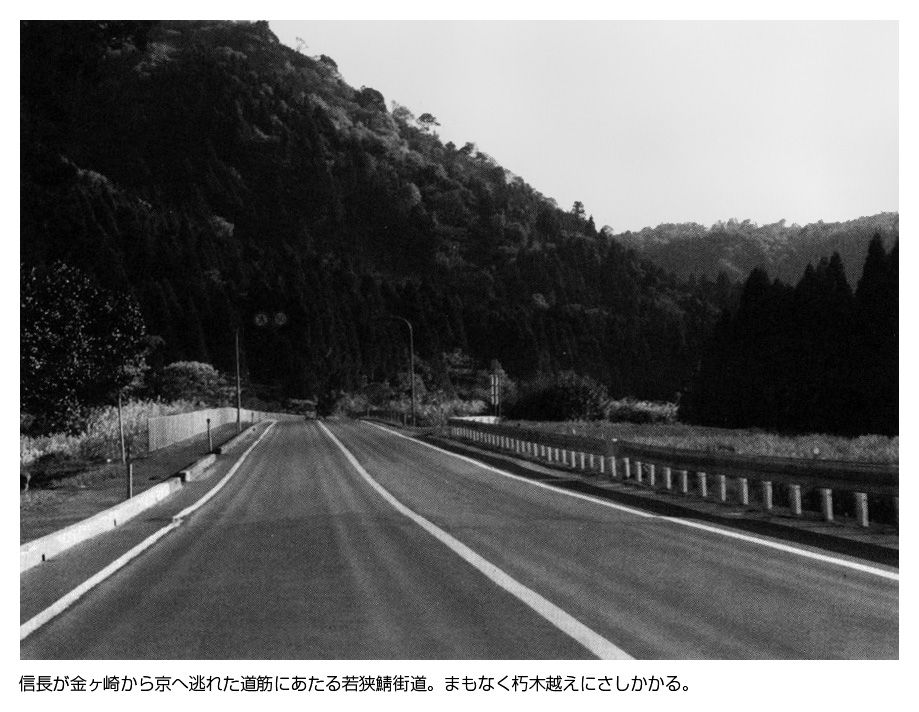

| 小和田哲男選集1 織田信長天下布武の野望 本能寺の変 (歴史群像デジタルアーカイブス) | |
| 小和田哲男 | |
| (2015) | |
歴史群像デジタルアーカイブス
小和田哲男選集１
織田信長 天下布武の野望
本能寺の変
小和田哲男
本書は「歴史群像デジタルアーカイブス」シリーズのうち『＜織田信長と戦国時代＞「天下布武」への戦略』『＜織田信長と戦国時代＞外国人が見た信長』『＜織田信長と戦国時代＞信長の革新性・七つのキーポイント』『＜織田信長と浅井長政＞二者択一に迫られた長政の決断』『＜織田信長と浅井長政＞信長の婚姻政策とお市の運命』『「方面軍司令官」任命で読む 秀吉・勝家・光秀に対する信長の評価』『＜織田信長と本能寺の変＞生真面目な逆襲』『＜本能寺の変＞ひっくり返った下剋上』『＜本能寺の変＞全国有力大名たちの動向』を合本したものです。
＜織田信長と戦国時代＞「天下布武」への戦略
戦国乱世に終止符を打つ
信長独自の大構想
桶狭間の戦いで今川氏を破り、本拠を小牧へ移した信長は、
隣国美濃を併呑して井の口を岐阜と改めると、
次にはその地に拠り、「天下布武」のスローガンを宣言した。
あらゆる方面に天才性を発揮した信長の「天下布武」のビジョンとは、
どのようなものであったのか？
乱世を終わらせる人間とは？
戦国武将にかぎらず、いつの時代でも、歴史に名を残すほどの人物は、他人よりすぐれた資質とか才能をもっていた。しかし、ふつうの場合、その資質とか才能といわれるものも、特筆されるのは一つか、せいぜい二つとか三つといった程度である。
ところが、織田信長はちがっていた。思いつくまま数えあげても、独創性、進歩性、国際性、先見性、決断力、統率力等々、かなりの数になる。まさに、超人的な資質のもち主であり、文字通り、「天才」という言葉があてはまる人物といわざるをえない。
何十年も続き、さらにこの先、何十年、いや何百年続いたかもしれない戦国の争乱状況は、この「天才」信長の出現によってようやくピリオドが打たれる可能性が見えてきたのである。その意味では、戦国時代の人びとにとって、信長の出現は特別の意味をもっていたといってもよい。
そして、「天才」信長が考えた戦国乱世を終息させるスローガンが「天下布武」であった。そこで、ここでは、信長はどのようなシナリオを描いて「一国繁栄主義」を唱える戦国大名たちを撃破していこうと考えていたのか、「天下布武」の大戦略とは、戦国状況の中でどのような意味あいをもっていたのかをさぐることにしたい。
勇気と独創性との結合
合戦というのは、いってみれば経験の積み重ねである。しかも、戦法という一種のセオリーがあり、決められた戦法から大きく逸脱するということはまず考えられない。相手の軍勢の数をつかみ、戦場となることが予想される場所の地形等を考えて陣立を決めて戦いに臨むことになる。
その場合、兵書に書かれている先例を勘案しながら、軍師が作戦を考え、それに基づいて戦術が練られることになるが、たいていは過去の蓄積がものをいう。「いついつの戦いで、この戦術で成功したからそれでいこう」とか、逆に、「あの戦いでは、この戦術で負けたから、今度は違う手でいこう」とか、これまでの経験にしばられるのがふつうである。つまり、戦略・戦術を変えるにしても、若干の微調整、ほんの少しの軌道修正にとどまっていた。
それはどうしてかといえば、大幅に戦略・戦術を変えることは、相当に勇気のいることだったからである。これまで経験したことのないことを、命懸けの実際の戦いの場にはじめて取り入れるということは、かなり勇気のある人物でなければできなかったのである。
だからこそ、一四八〇年代にはじまった戦国時代がほぼ五〇年ほど経過した信長誕生のころまで、同じような戦いが繰り返されていたことになる。
戦法を変えるという点で、信長が取り組んだことの一つは新兵器の採用、つまり、鉄砲の大量使用である。
それまでの戦いは、主として、弓・槍そして刀の戦いであった。特に弓は遠くにいる敵を倒すのに効果的だったし、飛道具としては石つぶても無視できない。そして、接近戦になれば、刀よりは槍であった。一対一の戦いでは刀の勝負ということもあったが、集団戦では槍の方が圧倒的に威力を発揮していたのである。
確かに、天文十二年（一五四三）に、鉄砲が種子島に伝えられ、各地の戦国大名もそれを入手し、実戦に使うということもあるにはあったが、信長の大量使用の段階まで、鉄砲は主要兵器とはいえず、補助的な兵器としての位置付けに終っていた。
理由は簡単である。火薬や弾の装塡に時間がかかったこと、精度もあまりよくなく、命中率、つまり、殺傷能力が意外に低かったことであり、さらに、一挺が相当高価だったということも指摘しておかなければならない。
天正三年（一五七五）五月の三河長篠・設楽原の戦いは、この信長による鉄砲大量使用のはじめての戦いとして知られている。従来通りのオーソドックスな戦い方ではなく、はじめて新兵器としての鉄砲を中心にした戦いであり、これは、それまで誰も試みたことのない戦い方であった。
先に少し触れたように、武将たちにとって、命を懸ける戦いに、それまでほとんど経験したことのない戦法を取り入れるということは相当勇気のいることであった。信長にはその勇気があったのである。
もっとも、勇気があっても、ほかの戦国大名家では、この鉄砲戦術はつぶされていたかもしれない。というのは、戦国大名は、いまの私たちが想像している以上に、家臣たち、特に重臣たちとの協調性を重視していたからである。戦国大名が、重臣たちとの「連合政権」であるという認識に立たないと、このときの信長による戦術革命の本当の意味はつかめないかもしれない。
信長もそうであるが、戦いのときには必ず軍評定、つまり軍議を開く。その軍議の席で陣立が決められ、戦術が決まっていくわけである。そして、信長以外の戦国大名家にあっては、重臣たちの発言力が強かった。重臣は比較的年輩者が多く、考え方としては保守的になりがちである。また、経験豊富であり、何ごとも経験を出発点にする傾向があった。そのため、戦術も過去からあまり逸脱しないということになる。
したがって、仮に、信長の軍議がそうなっていれば、「鉄砲を主に戦うなんて危険この上ない」と重臣たちの猛反対にあってその案はつぶされていたろう。信長は、勇気を実行に移すためには独裁が必要と考えていた。事実、信長は独裁体制を作りあげていたのである。勇気と独創性、そして独裁体制、この三つがドッキングして、はじめて後世まで語りつがれる長篠・設楽原の戦いの鉄砲革命が可能になったのである。
では、信長が独裁体制を確立し得た理由は何だったのだろうか。結論からいえば、恐怖政治をベースにした家臣団掌握にあった。織田家も、信長の父信秀のころまでは、他の戦国大名家と同じで、重臣や一族有力部将との連合体的な性格をもっていた。
ところが、信長は、肩を並べそうになった一族の織田信光を謀略で殺し、実の弟信行さえも殺して覇権を確立し、譜代の重臣たちの台頭も押さえこむことに成功したのである。たとえば、重臣筆頭で、宿老などともよばれた柴田勝家に対してさえ、「わしの方に足を向けて寝るな」とまでいっているほどであった。
それだけではない。信長は、柴田勝家に越前八郡を与えたが、実際は、「預け置くのだ」という認識をしていたのである。しかも、前田利家、佐々成政・金森長近らを与力としてつけている。実は、この与力が信長による独裁体制確立に大きな役割を果たしていたのである。
この場合、前田利家らは勝家の与力となったわけであるが、与力というのは勝家の家臣というのではない。あくまで主君は信長であり、知行は信長からもらっており、戦いのときなど、勝家の軍事指揮下に入るといった意味である。勝家の側からすれば、常に行動を前田利家らに監視されているということにもなるわけで、重臣クラスにまでこうした与力制を導入したのは信長の独創性といってよい。
「兵農分離」の軍団創出
ところで、戦法を変えるという点で、信長が取り組んだことのもう一つは、兵農分離である。戦国時代、信長の兵農分離政策が進むまでは、いわゆる専業武士、つまり常備軍団といわれるものは、私たちが想像しているより、はるかに少なかった。
専業武士は、国人あるいは国人領主などとよばれる有力家臣で、彼らは鎌倉時代の地頭の系譜を引くような武士であり、農業経営からは完全に切り離されていた。そして、階層としては、この国人のすぐ下にランクされるのが土豪とか地侍といわれた人たちである。
この土豪とか地侍といわれた人たちが兵農未分離、つまり、武士でもあり農民でもあったという階層で、有力名主などともよばれていた。ふだんは農業経営にたずさわり、「いざ戦い」というときだけ、鎧を身につけ、槍をもって出陣していった人びとである。彼らは名字をもっていたので「名字の百姓」などともいわれており、戦国大名の家臣のほとんどは彼らであった。
信長は、こうした武士でもあり農民でもあるという土豪の存在は、戦いにとって不都合であると考えていた。ふだん農業経営にタッチしているので、常備軍団とはなり得ず、集団的戦闘訓練ができない点である。そして、もう一つ、こちらの方が意味は大きいが、兵農未分離では、長期の出陣が不可能だったという点である。
たとえば、田植えだとか、稲刈りのときなど、戦いに出ていても、そうした農作業の方が大切で、戦いをやめて戻らなければならなくなる。
事実、信長の兵農分離以前の主な戦いのデータをとると、戦いは農閑期に行われていた。
信長は、「農繁期にも戦える軍団を作りたい」と考え、土豪・地侍主力の軍勢でなく、彼らを、村に百姓として残る者と武士として信長の城下に出てくる者とに分け、傭兵的な軍団作りを行うことに成功したのである。これで、信長軍はいつでも戦えることになり、城攻めをしていても、相手が音をあげるまで包囲するだけの態勢を作りあげ得たのである。
「天下布武」と信長の国家構想
よく知られているように、信長は、永禄十年（一五六七）八月十五日に、美濃の戦国大名斎藤龍興を逐って岐阜城を本拠にして少したったころから「天下布武」の四文字を印文とする印判を使いはじめた。この印文を撰んだのは沢彦宗恩という禅僧であるが、ただ、年号を決めるときのような要領で、中国の典籍から字をひろってくるのではなく、信長の意思を忖度し、信長のスローガンともなる文字を撰んだものである。
ただ、この「天下布武」という四文字を、従来は、「天下に武を布く」と読んで、「武力で天下を取ってやろう」、つまり、信長の武断主義宣言のように受けとめる傾向がある。しかし、「天下布武」をそのようにとらえたのでは、信長が考えた本当の意味が見えてこないのではないかと考えられる。
「天下布武」の武を、武力とか武略と見るのでそうした解釈が生まれてくるものと思われる。実は、「天下布武」の武は、武家の意味だったのである。中世の国家体制を考える理論として、権門体制論という考え方がある。提唱者は、大阪大学教授だった故黒田俊雄氏で、黒田氏によれば、中世は、公家と寺家と武家という三つの権門が、それぞれ一つではなく、三つがお互い補完しあいながら支配体制を作りあげていたというのである。
源頼朝がはじめた鎌倉幕府から武士の世の中がはじまったといわれるが、武家単独で政権を維持していたわけではなく、朝廷、すなわち公家勢力、寺社勢力との力の均衡の上に成り立っていたとする理論である。
公家・寺家・武家という三つの権門において、信長はいうまでもなく武家に属し、従来の尾張だけでなく、美濃も手に入れた段階で、将来の目標として、武家による単一的支配を構想し、それをスローガンにしたものと思われる。つまり、「天下布武」は、三権門のうち、公家と寺家の国家権力からの排除をうたったものだったと見ることができるのである。
そして、このことと密接に関係してくるのが、信長の国家構想とはどのようなものだったのかという問題である。そもそも、信長はいかなるポスト、官職で日本全体、すなわち天下に号令しようとしていたのだろうか。
信長が天下統一途上で倒れてしまったので、実際には信長が何を考えていたかはわからないわけであるが、本能寺の変直前の信長およびその周囲の動きを見ていくと、私は、信長は征夷大将軍になろうとしていたのではないかと考えている。そのあたりの動きを少し追いかけてみよう。
信長の構想した権力者像とは？
天正十年（一五八二）三月、信長が武田勝頼を討ち、武田氏を滅亡させたことで、朝廷は、いよいよ信長が武家のトップに立ったことを認識せざるをえなくなった。それまでは、朝廷側も、信長を全国に何人かいる有力武将の一人と見なしていたわけであるが、そうもいかなくなったというわけである。
信長が安土城に凱旋してきた直後の四月二十五日、朝廷では、信長に対する処遇をどうするかについて協議し、結論として、「太政大臣か関白か征夷大将軍か、信長が望む官に推任しよう」ということになった。これがいわゆる「三職推任」である。
早速、正親町天皇の勅使と付添の勧修寺晴豊が安土城に遣わされ、晴豊は五月四日、安土城に到着した。信長は忙しかったのか、あるいは何か別な理由があったものか、勅使到着の四日、そして翌五日にも晴豊らと会おうとせず、森蘭丸に勅使派遣の理由を聞かせており、晴豊の口から、三職のうちどれでもお好きな官に推任したいこと、できたら征夷大将軍を受けていただきたい意向のあることを聞き出している。
信長が勧修寺晴豊と会ったのは、勅使到着から二日たった五月六日のことであった。晴豊の口から直接、朝廷の意向が伝えられたが、そのとき、信長は、「自分は征夷大将軍になりたい」とか「関白になりたい」とか一言もいっていない。つまり、正式には、信長が何になりたかったのかについては永遠の謎になってしまったわけである。
「信長は征夷大将軍になりたかった」と私が考えたのは、やはり「天下布武」の印文の存在である。太政大臣・関白・征夷大将軍という三つの官職を見た場合、太政大臣および関白は公家としての官職であり、武門の棟梁としての色彩が濃い征夷大将軍とはずいぶんちがっている。「天下布武」をスローガンにしている信長としてみれば、太政大臣・関白は全く眼中になかったのではなかろうか。
ただ、征夷大将軍は征夷大将軍でも、それまで通りの征夷大将軍だったのかどうかについてはわからない。私は、むしろちがうスタイルの征夷大将軍というものを信長は視野に入れて構想していたのではないかと考えている。それは、「天下布武」の天下というものを、信長がどのようにとらえていたのかということと関係する。
いまの私たちの感覚だと、この「天下布武」の天下もそうだし、「天下統一」の天下も、単に日本全国といった意味あいでとらえてしまう傾向がある。しかし、信長が「天下布武」といったときの天下は、もう少し大きなものを考えていたのではないかと思われる。
というのは、信長の時代、天道思想という考え方があったからである。信長の一代記である『信長公記』を著した太田牛一も、同書の中で、しばしば「天道おそるべし」といった表現を使っている。
天道思想の背景となるのは、単に仏教とか神道というのではなく、儒教や道教、さらにはキリスト教の考え方までも含み込んだきわめてグローバルなとらえ方であった。信長が安土城の最高所に建てた高層建築を「天主」とよんだのも、この天道思想の天につながるものであったし、印文「天下布武」の天も全く無関係だったとは思えない。
実際、安土城天主の中を見ることによって、信長が考えていた天の意味がある程度浮き彫りになってくる。安土城天主の内部については、これまで、建築史家内藤昌氏、宮上茂隆氏らによって明らかにされてきたが、両氏の研究を総合すると、五階（六重目）は、仏教的世界が表現され、最上層の六階（七重目）は、孔門十哲や、道教の祖神である老子などが描かれ、儒教と道教の世界が表現されていることがわかる。
つまり、信長が考える天道思想の天、それは「天下布武」の天につながり、仏教・儒教・道教の三教一致の世界だったことになり、そのことは、日本的な思考を超越し、むしろ、考え方としては中国的だったといってよい。公家・寺家という二つの権門を排除し、武家による天下統一を考えたとき、信長が見据えていたのは、日本の天皇ではなく、中国の皇帝だった可能性すらある。
したがって、信長が征夷大将軍になりたいと考え、征夷大将軍として天下に号令するといっても、信長が構想した征夷大将軍は中国の皇帝に近い存在だったのかもしれない。天皇を超越し、場合によっては「天皇ぬきの将軍」、あるいは、「天皇を指名できる将軍」というものを考えていたのかもしれない。最近、天皇より上位者である「治天の君」をめざしたとする研究も生まれているのである。
＊三教一致＝三つの教えが根本では合致すること。中国では、儒・仏・道、日本では、神・儒・仏の三つ。
権力者としての自負
もっとも、「天皇ぬきの将軍」あるいは「治天の君」をめざしたといっても、当時の古文書・古記録にそのような信長の意図が記述されているわけでもなく、あくまでも状況から考え、そのような意向をもっていたのではないかと推察するだけである。しかし、全く材料がないわけではない。一例をあげておこう。
天正九年（一五八一）二月二十八日に、信長が皇居東門外で馬揃え、すなわち、信長軍団の威容をアピールする軍事パレードを行ったとき、巡察師として来日していたヴァリニャーノが「天皇に謁見をしたい」と申し出たが、それは信長に拒否されている。そのときの様子がルイス・フロイスの書簡（『日本巡察記』解題Ⅱ所収）にみえる。
私が都にいた時に、幾度も信長の許で、贈物を携えて（天）皇を訪問できるよう尽力されたいと恩恵を乞うた。......しかるに信長は傲慢であり、非常に不遜であったので、その願いを聞き容れず、むしろ不愉快そうにし、予がいる処では、汝等は他人の寵をえる必要がない。なぜなら、予が国王であり、内裏である、と私に語った。
宣教師たちは、信長の国家構想などまで視野に入れて観察していたわけではないので、傲慢と不遜という言葉で片づけてしまっているが、信長の真意は、一番最後の部分、「予が国王であり、内裏である」といったというところに明確に表れている。
これだけでは、「治天の君」をめざしたのか、中国型の皇帝をめざしたのか、西欧型絶対王政をめざしたのかはわからない。しかし、仮にそのどれをとったとしても、従来型の天皇から任命され、公家・寺家と補完しあいながら政権の一部を担当する征夷大将軍とは異質なものであったことはまちがいない。
何度もいうが、「天下布武」は、三つの権門のうち、武家だけが政権を担当するという国家構想を端的に表現したものだったのである。
そして、武家以外の二つの権門のうち、寺家の押さえこみには成功した。比叡山延暦寺の焼き討ち、石山本願寺との一一年間にわたる戦いがその象徴的なできごとである。残るもう一つの公家対策に取りかかったとき、本能寺の変で、信長は明智光秀の謀反というアクシデントに見まわれ、公家の押さえこみには失敗し、信長の時代には、「天下布武」は成就しなかったのである。
いま私は、アクシデントという表現を使ったが、これが単なるアクシデントなのかについては議論が生まれてきそうなところで、近年、クローズ・アップされつつある本能寺の変の朝廷黒幕説の立場に立てば、それは計画されたアクシデントということになり、「天下布武」路線の思わぬ決着の仕方と見ることもできるのではないかと思われる。
キーワードは情報と経済
では、この戦国時代、なぜ、信長だけが「天下布武」という国家構想を描き得たのだろうか。信長路線を引き継いだはずの秀吉でさえ、この「天下布武」は継承することができず、結局、関白という形で公家政権の一部に取り込まれてしまったことを見ても、いかに信長の「天下布武」の大戦略が傑出したものであったかがわかろう。
それを、ただ「天才」という言葉で片づけてしまったのでは、歴史の本質に迫ることはできない。信長のどのようなところにその出発点があったのかについて、掘り下げることにしたい。
信長のエピソードとして、宣教師に会ったとき、地球儀を見せられ、「地球は丸い」との説明を受け、「理に叶う」と即答した話はよく知られている。確かに、いまの感覚からすれば、地球が丸いのは当り前で、地球儀を前に説明を受ければ、誰しも納得して当然という印象を受ける。
しかし、信長の時代は、天動説絶対優位であり、一般的な受けとり方としては、「天円地方」論が主流というか圧倒的だった。「天円地方」論というのは、天空が丸く、地上は方形であるという考え方である。天空が無限で、地球が丸いという考え方とはへだたりがあった。
信長が、宣教師から一言、二言の説明を受けただけで、地球が丸いことを理解したというのは、それだけ、信長の頭が柔軟だったことを物語っているといってよい。頭が固ければ、そのような新しい考え方を受けいれることはできなかったろう。
頭が柔軟だったから、さまざまなアイデアも浮かんだのであろう。信長のすぐれたアイデアマンぶりはいろいろなところで見られるが、たとえば、鉄張り軍艦を考え出したことなどは、頭の柔軟性を示すものであろう。
信長が石山本願寺の顕如と戦っていたとき、本願寺は今の大阪城のところであるが、当時は今とちがってすぐ西側は海となっていた。そのため、織田軍は、北・東・南の三方を大軍で包囲しても、西はどうしても開いてしまう。そこで、水軍を組織して海上封鎖を試みたわけであるが、本願寺を支援する毛利氏の水軍が兵糧を運び入れようとしてそこで戦いとなり、水軍力にまさる毛利軍が勝っていた。
織田水軍が負けるパターンは決まっていて、毛利水軍から射こまれる火矢や、投げこまれる炮烙、すなわち一種の火炎ビンによって、軍船が火災をおこし沈没してしまうというものであった。信長は、「何とか火矢や炮烙をはねかえす船は造れないものだろうか」と考えた。そこで思いついたのが、薄い鉄板を船に張ることだったのである。当時、人間は鉄製の甲冑で身を守っており、馬にも馬鎧というのがあったので、「船にも鎧を着せる」という発想だったのかもしれない。
結局、この鉄張り軍艦を六艘造り、大阪湾海戦で、弱かった織田水軍が、戦国最強ともいうべき毛利水軍、すなわち瀬戸内水軍を撃ち破っているのである。まさに、信長のアイデアの勝利であった。
しかし、いうまでもないが、アイデアだけで勝てるというものではない。信長の「天下布武」の大戦略を支えていたのは、情報と経済であった。
戦国時代、情報が戦いの帰趨を決めるということがかなり見られた。武将たちは、それなりに、いかに的確な情報を得るか、その正確さとスピードが大事だということは認識していた。そのため、忍者を使ったり、修験山伏、あるいは琵琶法師などに情報をさぐらせていたのである。
信長の場合、情報収集だけでなく、情報操作も行っていた。有名なのが、永禄三年（一五六〇）の桶狭間の戦いを前にしての離間策であるが、今川方に寝返った戸部新左衛門の筆跡を右筆にまねさせ、偽りの内容を書いた文書を今川方に届け、今川の手によって戸部新左衛門を殺させたり、また、山口左馬助・九郎次郎父子の場合には、うわさを利用してやはり今川の手によって殺させているのである。
桶狭間の戦い後の論功行賞の場において、信長が、今川義元に一番槍をつけた服部小平太、さらに、義元の首を取った毛利新介でなく、その日の義元の動向を信長のもとに逐一報告した簗田政綱を一番手柄としたのは、信長が「武功」とならんで、「情報」を高く評価していたからにほかならない。のち、信長が和泉の堺に目をつけたのは、堺が畿内における情報の最大の集積地であり、発信地だったからである。
最後に、「天下布武」の大戦略を支えたもう一つの柱である経済についてみておこう。
信長は、父信秀がもっていた経済的センスをそのまま受け継いだといってよい。ただ農民たちから年貢を収奪するというのではなく、次第に台頭してきた商人たちから冥加金という形で上納させ、財源としていったのである。
確かに、信長が本領とした尾張と美濃は濃尾平野が展開し、木曾川・長良川流域の肥沃な大地は生産力も高く、わが国有数の穀倉地帯であった。しかし、信秀および信長の飛躍を決定づけたのは、尾張の伊勢湾舟運とそれにかかわる商品流通だったのである。
信長の政策としてよく知られるのが、楽市楽座、関所撤廃などである。これらは、いずれも信長の商品流通重視の考え方を出発点としたものであった。
ふつう、戦国大名の領国では、敵からの侵略を警戒して、道は細く、しかも曲がりくねって、川には橋を架けなかった。ところが、信長は、そのすべての逆を行った。道を太くし、まっすぐにし、主要な川には橋を架けたのである。
これは、信長が、敵からの侵略を心配するよりも、商人たちの往来を活発にし、商人たちの冥加金上納で財源をふやし、それで兵を養い、武器を調えて戦争に勝つ方が有利であると考えたからである。
冒頭のところで、信長が大量の鉄砲使用という新しい戦術に取り組んだことを見たが、当時、鉄砲は非常に高価で、ふつうの戦国大名では、せいぜい数百挺を準備するのが関の山であった。長篠・設楽原の戦いのときの信長軍の鉄砲三〇〇〇挺というのは、信長の経済力を背景にしてはじめて可能だったのである。
情報のところで堺の重要性を指摘したのと同様、経済の面でも堺は信長にとって大きな意味をもった。その点でいえば、信長が永禄十二年（一五六九）三月、将軍足利義昭から褒美として副将軍就任を勧められたが、それを蹴り、堺と近江の大津・草津を直轄地にしたいと申し出て許されたことは、信長自身にとって、画期となる選択だったといえる。高位を辞退し、経済上の実を取ることは、なかなか、ふつうの武将には考えつかないことである。
＜織田信長と戦国時代＞外国人が見た信長
炯眼で見抜いた
絶対君主の相貌
太田牛一のフィルター
信長と同時代人が書いた信長の伝記としては、『信長公記』が一番くわしいし、また、記述もかなり正確で、「首巻」部分、年月のちがいや、著者太田牛一本人の記憶ちがいがみられるほかは、ほぼ信頼できる内容となっている。
しかし、内容がくわしく、正確であるからといって、信長の人間性や人物像を正しく伝えているということにはならない。なぜなら、太田牛一は信長に仕えていた人物だからである。当時の武士道のあり方からいっても、ありのままの批判、赤裸々な評価を太田牛一自身が信長に対して下せる立場ではなかった。
一例をあげよう。太田牛一は、安土城築城の情況を描写する中で、大きな石を山上に引き上げる際、大変な苦労があったが、「信長の御巧」によって容易に引き上げることができたとしている。ところが、同じ情況描写をしているルイス・フロイスの『日本史』によると、その大きな石が少し片側へ滑り出たために、たちまちのうちに一五〇人の人夫が圧死したことを伝えている。明らかに太田牛一は、信長にとってマイナス・イメージになるこの事件を故意に記述からはずしている。
その意味で、一番くわしく、また、一番正確とされる太田牛一の『信長公記』も、ある程度のフィルターがかけられていたことを、直視しないわけにはいかないのである。そうしたフィルターをかけない状態で、本当の信長の姿をみるためには、信長の家臣でなく、また、身内でない、つまり、ひいきをしないですむ人びとの記述に依拠していくことが必要と思われる。
外国人はその意味では一番公正な見方をしていた人びとだったかもしれない。以下、外国人が観察した信長についてみていくことにしよう。
『日本王国記』の信長像
外国人としては、宣教師たちの報告が量としても一番多いわけであるが、フロイスやヴァリニャーノの記述についてはあとでみることとして、まず、イスパニアの商人アビラ・ヒロンの『日本王国記』についてみておこう。
ヒロン自身が日本に入国したのは文禄三年（一五九四）で、信長が死んですでに一二年もたったあとである。したがって、ヒロンは信長と一度も会ってはいない。しかし、商人たちや宣教師たちから、信長に関するいろいろな話を聞いたものと思われる。ヒロンの著わした『日本王国記』には、信長最期の場面のところで信長の容貌などをくわしく記している。なお、『日本王国記』は佐久間正・会田由訳、岩生成一注の『大航海時代叢書』Ⅺを用いる。
同書第四章の第七節「羽柴筑前が都へ到着し、諸公から信長の仇を報ずるために総大将に選ばれる。反逆者に対する戦いと反逆者の敗北について」の中で、つぎのようにみえる。
偉人信長の死は、彼の勇気、寛容、それに気がまえのけだかさなどで、ひとしくすべての人々に惜しまれた。彼は体格のよい、背の高い、よく均整のとれた人物で、眼は大きく、鼻の高い、小麦色の肌で、神経の強靭な、やせて、毛ぶかい、すばらしい武士で、しかも気さくで、面倒くさい儀式ばったことを極端に嫌った。日本では、屋形や大身の領主たちは、地面に足をつけたり、徒歩で歩くということはできないというのが風習であった。しかしこの武張った王者は、国王や太守は武人でなくてはならぬ、決して家の中に閉じこもった上臈ではないはずだと、いつも言っていた。だから、彼は草履だの藁でつくった履物をはいて、市中を歩いたり、馬に跨って行った。
またいずれかの城とか宮殿を造営している時には、その工事現場へ着くと馬から降りて、一枚の虎の皮をとって、これを腰のまわりにまとった。そうして、その必要があったり、その方が便宜だという時には、地面にそれを敷いてその上に坐ったし、自分の造営している工事に出かけて行くばかりでなく、彼に仕えている殿や家臣が造っている邸宅を見に行くことを楽しみにして、よく設計図を所望した。そしてそれが彼の気に入ると、結構だと是認したが、それがお気に召さないと、けなしつけて、それに手を入れて直したものである。
彼は坊主どもを目の仇にして、彼らを忌み嫌っていた反面、キリシタンのよき友であった。だからそのころこの地にあること三十年に及ぶイエズス会のパードレたちに数々の栄誉をさずけたのであった。それに、パードレ・グレゴリオ・デ・セスペデスは彼と話をして、わたしに彼のことをいろいろ話してくれたが、彼は信長のごく仲の好い友人であった。だからもし死が彼の前途をさえぎることさえなかったら、彼には必ずやキリシタン宗徒を支援してくれたにちがいないという、多大の期待がよせられていたのであった。
恩賞を多く与えた信長
いま、ここに引用したところからもうかがわれるように、アビラ・ヒロンが『日本王国記』を著わすに際し、ヒロンに信長情報を提供したのはイエズス会宣教師グレゴリオ・デ・セスペデスであった。セスペデスは、ヒロンのいうように「信長のごく仲の好い友人」だったかどうかはわからないが、天正五年（一五七七）に来日し、主として畿内での布教に従事していたので、信長との交流はあったものと思われる。
信長の身体的特徴については、後述するフロイスの観察とは若干異なる。しかも、毛ぶかく、小麦色の肌をしていたというのは、セスペデス情報からしかうかがうことはできない。
なお、信長が家臣たちの武家屋敷にいちいちけちをつけていたというのも、この『日本王国記』にしかみえず、信長の知られざる一面をかいまみせているといえよう。
ところで、同書第四章の総論部分にも信長に関する注目すべき記述がみえる。
.........信長は武勇にすぐれ、名誉心も旺盛な人物だったし、その配下には多数のすぐれた武将をもっていて、しかも彼らに幾多の恩賞をほどこしていたので、これと思う人々とこの件を議すると、都へおしのぼって、天下の主君としての信長のすがたを見たいという意志をすべての人々に抱かせることができた。かくて、軍の将たる者どもを任命し、彼らに知行を与え、兵には給金を払って、諸事万端ぬかりない準備が進められ始めた。そこで、来る日も来る日も、おびただしい武将らが、彼のもとへ馳せ集まった。
信長が武勇にすぐれ、名誉心が旺盛だったという点は他の史料にもみえることなので、ここではあらためて問題にはしない。しかし、いまここに引用した部分の後半については、少し説明を加えておきたい。武将たちには知行を与え、兵たちには給金を払ったという部分である。
信長のもとに将兵が集まってきたのは、信長が家臣たちに「幾多の恩賞をほどこしていた」からであった。当時、戦国武士たちの意識の中に、強い者へ傾斜していくという論理があったが、それは同時に、家臣たちが、より多くの恩賞をくれる主人のもとに収斂されていく過程でもあった。アビラ・ヒロンはそうした点を、信長急成長の一つの秘密として理解していたのである。
フロイスの信長観
さて、外国人のみた信長という場合、信長情報を一番多く残しているのはルイス・フロイスである。フロイスの著わした『日本史』には、何か所にもわたって信長に関する記述がみられる。ここでは、松田毅一・川崎桃太訳『フロイス日本史』の第四巻および第五巻から引用する。
まず、信長総説ともいうべき有名な記事を掲げよう。
信長は尾張の国の三分の二の主君なる殿（信秀）の第二子であった。彼は天下を統治し始めた時には三十七歳くらいであったろう。彼は中くらいの背丈で、華奢な体軀であり、髯は少なくはなはだ声は快調で、極度に戦を好み、軍事的修練にいそしみ、名誉心に富み、正義において厳格であった。彼は自らに加えられた侮辱に対しては懲罰せずにはおかなかった。幾つかのことでは人情味と慈愛を示した。彼の睡眠（時間）は短く早朝に起床した。貪欲でなく、はなはだ決断を秘め、戦術にきわめて老練で、非常に性急であり、激昂はするが、平素はそうでもなかった。彼はわずかしか、またはほとんどまったく家臣の忠言に従わず、一同からきわめて畏敬されていた。酒を飲まず、食を節し、（人の）取扱いにはきわめて率直で、自らの見解に尊大であった。
彼は日本のすべての王侯を軽蔑し、下僚に対するように肩の上から彼らに話をした。そして人々は彼に絶対君主（に対するように）服従した。彼は戦運が己れに背いても心気広濶、忍耐強かった。彼は善き理性と明晰な判断力を有し、神および仏のいっさいの礼拝、尊崇、ならびにあらゆる異教的占卜や迷信的慣習の軽蔑者であった。形だけは当初法華宗に属しているような態度を示したが、顕位に就いて後は尊大にすべての偶像を見下げ、若干の点、禅宗の見解に従い、霊魂の不滅、来世の賞罰などはないと見なした。
彼は自邸においてきわめて清潔であり、自己のあらゆることの指図に非常に良心的で、対談の際、遷延することや、だらだらした前置きを嫌い、ごく卑賤の者とも親しく話をした。彼が特別愛好したのは著名な茶の湯の器、良馬、刀剣、鷹狩りであり、目前で（身分の）高い者も低い者も裸体で相撲をとらせることをはなはだ好んだ。何ぴとも武器を携えて彼の前に罷り出ることを許さなかった。彼は少しく憂鬱な面影を有し、困難な企てに着手するに当ってははなはだ大胆不敵で、万事において人々は彼の言葉に服従した。
ここに、信長の肉体的特徴から性格、趣味、宗教観などが集約して述べられており、今日、信長がどういう男だったのかをイメージとして描く上で、この記述にまさるものはないといってよい。独裁者的情況も描かれており、おそらく、ここに描き出された姿が、信長の真の姿であったろう。
逆上しやすかった信長
もっともフロイスは、同じ『日本史』の中で、もう少し辛辣な信長評も展開している。たとえば、明智光秀とのかかわりについてふれた箇所では、「元来、逆上しやすく、自らの命令に対して反対（意見）を言われることに堪えられない性質であったので.........」と記しているのである。さきに引用した部分で、「激昂はするが、平素はそうでもなかった」という叙述とは矛盾してくる。
逆上しやすかったというのが実際のところだったのであろう。フロイスとしても、キリスト教保護者信長を、あからさまに悪くは書けなかったものと思われる。このあたり、外国人の書いたものも少しはフィルターがかけられていたことに注意が払われねばならない。
フロイスの信長観察については、すでに諸書にふれられ、周知の側面が多いので、ここらできりあげ、ちがった観察記録をとりあげることにしよう。
最大の支配権もつ信長
アレシャンドゥロ・ヴァリニャーノは、天正七年（一五七九）から同十年（一五八二）、同十八年（一五九〇）から文禄元年（一五九二）、そして慶長二年（一五九七）から同八年（一六〇三）まで、実に三回にわたってイエズス会の「巡察師」として日本に滞在している。「巡察師」というのは、在日イエズス会宣教師の最高監督者であり、第一回巡察のときには信長との交流もあり、帰国のとき、信長秘蔵の安土城図屛風をプレゼントされたことでも知られている。
そのヴァリニャーノが、巡察したことがらをまとめた「日本諸事要録」（佐久間正訳）、「日本諸事要録補遺」（近松洋男訳）の二つをあわせ、『日本巡察記』（東洋文庫）として刊行されている。ヴァリニャーノは、いかにも「巡察師」らしい筆致でつぎのように記している。
.........ついに我等の主なる神は、信長を立ち上がらせ給うた。彼は新しい公方を追放し、前記諸領主をことごとく殺戮し、日本でそれまで五百年間における最大の支配権を獲得するに至った。彼は司祭達を召還したのみならず、深く保護したので、都（の民）はすべて異教徒であり、能うる限りの妨害を行なったにもかかわらず、司祭達は都に優雅な聖堂のある一軒の修院を設立することができた。
信長を、「ここ五百年間における最大の領主」と表現したのは、私の知るところヴァリニャーノだけであるが、フロイスも、前記『日本史』の中で、「信長は日本王国の絶対的君主」と評しているので、外国人の目にそのように映ったことがうかがわれる。また、
.........司祭達が日本に到着した時、またその後の長い間、日本では仏法僧達は大いなる勢力を有し、尊敬もされており、偶像崇拝はその頂点に達していたのであるが、時の経過と共に、司祭達が彼等の宗教の欺瞞を見出し、日本人から信用と権威を獲得するにつれ、仏法僧に対する人々の信用と尊敬心は失われだした。そしてついには信長は、それらの宗派はみな誤りであり、多大の財力を有する仏法僧がいとも大勢日本にいることは無駄であり、余計なことだとたびたび公言した。そして信長は、彼等の地所と財産を没収して家臣に与えたので、彼等と衝突し始めた。仏法僧等の多くはこれに抵抗して戦端を開いたが、多数が戦死したり孤立して、彼が領有していた諸国では、偶像崇拝は仏法僧達と共に没落していった。
と記されているように、信長の仏教批判のありさまが描き出されている。「多大の財力を有する仏法僧がいとも大勢日本にいることは無駄であり、余計なことだ」と信長がいっていたというのは事実であろう。
自らが招いた死
外国人がみた信長ということで、最後に特記しておきたいのは、信長最期の場面、すなわち、天正十年（一五八二）六月二日の本能寺の変にかかわる描写である。日本側文献で一番くわしい太田牛一の『信長公記』は、信長は、弓をもって寄せ手と戦ったが、弓の弦が切れたため、今度は鎗で戦い、肘に鎗疵をこうむり、部屋に入ってから切腹したとするが、外国人が記した本能寺の変見聞記はややちがっている。
『イエズス会日本年報』上巻（村上直次郎訳・柳谷武夫編輯）所収の一五八二年〔天正十年〕の日本年報追加、すなわち「一五八二年十一月五日〔天正十年十月二十日〕付、口ノ津発、パードレ・ルイス・フロイスが信長の死につきイエズス会総会長に贈りたるもの」には、つぎのように記されている。
.........これは当八十二年六月二十日〔天正十年六月一日〕水曜日のことであった。また銃は皆火繩に点火して引金に挾むことを命じ、鎗も整えさせた。部下はこれが何のためであるか疑い、或は信長の命により明智が信長の義弟三河の王を殺すのであろうと考えた。信長が都において宿泊する例であり、僧侶を悉く出し、相当に手を入れた天王寺〔本能寺の誤〕と称する僧院の附近に着いて、三万人は天明前僧院を完全包囲した。
市においては事は全く意外で、何か騒ぎが起ったことと考えて、その報を伝えた。わが聖堂は信長の所より僅に一街を距てたのみであった故、キリシタン等が直に来て、早朝のミサを行うため着物を着替えていた予〔パードル・カリヤンならん〕に対し。宮殿の前で騒ぎが起り、重大事件と見ゆる故暫く待つことを勧めた。
その後銃声が聞え、火が上った。つぎに喧嘩ではなく、明智が信長に叛いてこれを囲んだという知らせが来た。明智の兵は宮殿の戸に達して直に中に入った。同所ではかくの如き謀叛を嫌疑せず、抵抗する者がなかったため、内部に入って信長が手と顔を洗い終って手拭で清めていたのを見た。而してその背に矢を放った。信長はこの矢を抜いて薙刀、すなわち柄の長く鎌の如き形の武器を執って暫く戦ったが、腕に弾創を受けてその室に入り戸を閉ぢた。或人は彼が切腹したと言い、他の人達は宮殿に火を放って死んだと言う。併し我等の知り得たところは、諸人がその声でなく、その名を聞いたのみで戦慄した人が、毛髪も残らず塵と灰に帰したことである。
信長が遺骸を全く残さなかったことは事実である。ところで、『イエズス会日本年報』には、信長最後の言葉はみえない。しかし、『信長公記』には、「是非に及ばず」といったとあり、前述アビラ・ヒロンの『日本王国記』によると、「余は余自ら死を招いたな」といったとしている。私には、外国人たちの描写の方が実際に近かったようにみえる。
＜織田信長と戦国時代＞信長の革新性・七つのキーポイント
中世を革命した比類なき先見と独創精神
壱
専業武士団の創設
寄親寄子制の限界
戦国時代は、その字が示すように、合戦が日常的にくりかえされていた。つまり、戦国乱世を勝ちぬいていくためには、合戦に勝たなければならなかった。合戦に勝つだけの軍事力をもつ必要があったのである。
その場合、兵の数が多いか少ないか、すなわち、量が問題とされることはもちろんであるが、それ以上に、兵がどれだけ訓練されているか、また、どれだけの装備をしているかといった質が決定的な要因となっていたといってよい。
信長の兵の量と質をみる前に、他の戦国大名の具体例をみることにしよう。信長の革新性がより際立って読みとれると考えられるからだ。具体例としては後北条氏をとりあげよう。俗に「関八州の大守」などといわれ、最盛時には五万六〇〇〇もの大軍を擁し、最大級の戦国大名の一人であった。
後北条氏の軍団編成の基本は寄親寄子制で、寄親というのは支城主クラスで、後北条氏一族の者がなっていたり、重臣がなっていたりするが、寄子はその配下に属す形となる。寄子は、ふつう、土豪とか地侍とか、場合によっては有力名主などと呼ばれており、地侍の言葉が端的に示しているように、在地している、つまり、村に住んでいる小領主のことである。
彼らは、有力名主と呼ばれるように、基本的には農民であった。ただ、ふつうの農民とちがうのは、苗字をもち、刀・槍などの武器をもっていた点である。「苗字帯刀」と呼ばれるゆえんである。土豪・地侍は、ふだんは農業経営に従事していたが、「いざ合戦」ということになると、武装をし、寄親のいる城に馳せ参ずるしくみとなっていた。そのとき、何人かの被官を連れていくわけであるが、後北条氏の場合、それが着到状という形ではっきりするのである。
寄子、すなわち土豪・地侍は、後北条氏から給恩として所領をもらう。後北条氏では、田一反五〇〇文、畠一反一六五文という数字がはっきりしており、田畠の広さはそのまま貫高として計算され、現存する着到状を分析し、単純に平均化すると、だいたい七貫文について一人の兵を出すという計算になる。
たとえば、大曾根飛驒守という土豪の場合、二七貫二〇〇文という貫高の知行地を武蔵国の鴨志田というところでもらっていたが、それに対し、大根飛驒守自身が馬に乗って出てくることが要求され、そのとき、槍持一人、指物持一人、歩者一人の計三人を連れて出陣することが義務とされていた。つまり、大根飛驒守は、「いざ合戦」というとき、四人の小集団で出陣していったのである。寄親の城にはこのような小集団が集まっていた。
この軍団編成は兵農未分離を前提としていたことが明らかであり、後北条氏の場合、それでも兵力が不足し、大きな戦いのときには、郷村に居住する農民の成年男子を根こそぎ兵として徴兵するシステムもあった。これを「百姓大量動員態勢」といっているが、さきの寄子の小集団といい、この「百姓大量動員態勢」といい、いずれも、農民が兵の基本となっていたことを物語っている。
農繁期も戦える常備軍団
こうした寄親寄子制・「百姓大量動員態勢」という兵農未分離を前提とした軍団編成のあり方は、後北条氏にかぎらず、ほとんどの戦国大名に共通するものであった。
信長はこの兵農未分離という大前提をつきくずしているのである。「いざ合戦」というときだけ兵になるのではなく、合戦のないときも兵であり続けるという専業武士団の創設に一歩踏み出しており、それは、信長以前の戦国大名が、だれ一人として考えつかないことであった。
では、専業武士団が創設されたことのメリットはどのような点だったのであろうか。まず第一に特筆されることは、兵農分離によって専業武士が多数生まれたことにより、長期の出陣、もっといえば、農繁期の出陣も可能になったという点である。あたりまえといってしまえばそれまでであるが、このことのもつ意味はかなり大きなものがあった。
たとえば、上杉謙信と武田信玄の五回におよぶ川中島の戦いをみてみよう。五回戦っているその月に注目すると、八月が三回、七月と九月が各一回である。つまり、謙信・信玄両雄の戦いは、常に、田植えがすんで、刈入れまでの間にくりひろげられていたことがわかる。
また、謙信は「越山」、すなわち三国峠を越えて何回も関東に兵をくり出しているが、それはいずれも刈入れ後、翌年の田植えまでの間に集中している。謙信の場合、冬は雪に埋もれるからという理由も一つであるが、とにかく軍事行動は農閑期に限定されてしまっている。
これは武田信玄も同じで、せっかく城を攻め落としても、農繁期になるということで兵を甲斐に戻し、戻している間にまた奪い取られるということを何度もくりかえしている状況である。
兵と農が分離した信長の常備軍団は、農繁期だからといって国もとに帰る必要はない。極端な話、もし攻めている城が容易に落ちなければ、一年でも二年でも包囲したままの状態を保つことができたし、城を落として、まだ不安定なら、そこに兵をそのまま置くことができたのである。
それともう一つは質の問題になるが、専業武士となり常備軍化したことにより、より高度な戦闘訓練が行われた点である。戦いのないときに農耕に従事している者と、戦いのないときも武器をもって訓練している者とでは強さに開きが出るのは当然と思われる。また、兵農未分離では個々の寄子の小集団のよせ集めなので、集団訓練は所詮無理である。後北条氏の場合、たとえば鉢形城の北条氏邦が年二回、正月四日と七月七日、全家臣を集めて閲兵式を行っているぐらいで、信長軍が集団訓練にもとづいて集団戦法をくりひろげていけば、兵の質にそれまでの戦国大名とでは格段の開きができていったことはいうまでもない。

弐
居城の前進移転
信長の城下町集住策
専業武士団の創設、すなわち、信長家臣団の常備軍化によって、それまでの在郷家臣が城下町に集められることになった。これがいわゆる「城下町集住策」と呼ばれるものである。もっとも、ただ、「城下町集住策」といった場合には、これは信長の創見ではない。すでに十五世紀末の段階で、越前の戦国大名朝倉孝景が「朝倉孝景条々」の中で、「朝倉が館の外、国内に城郭を構えさせまじく候、惣別分限あらん者、一乗谷へ引越、郷村には代官ばかり置かるべき事」と述べているように、家臣の一乗谷城下への集住を策しており、この傾向は他の戦国大名にも共通していたといってよい。
信長の「城下町集住策」が特筆されるのは常備軍化した全家臣を城下町に集住させたという点である。さきの朝倉氏にかぎらず、信長以前の「城下町集住策」は全家臣を対象としたものではなく、有力家臣、すなわち寄親クラスの家臣を対象としたものであった。兵農未分離状況の戦国大名の下では、兵農一致の、つまり、兵でもあり農でもある家臣を城下町に居住させてしまえば、農業のほうが成りたたなくなることは目に見えていたからである。
この点、農業経営から切り離された専業武士は城下町に集住することは容易であり、信長の城下町に全家臣団が居住する形となった。そして、このことを大前提として、信長は自己の居城を攻略すべき対象に応じて移していくことが可能となったのである。
これを私は「信長の居城の前進移転」と表現しているが、他の戦国大名に見られないことであり、信長の革新性を物語る一つと考えている。
いま私は、「他の戦国大名に見られない」といったが、若干の説明が必要かもしれない。というのは、居城を移している戦国大名は結構見られるからである。たとえば、奥州の伊達氏は、梁川城から桑折西山城に移り、さらに米沢城に移っており、三河の松平氏も、何代かかけて岩津城から安祥城に移り、さらに岡崎城に移っている。
ただ、これらの例は、いずれも、何代かかけて、勢力圏の拡大にともなって支配しやすい所に新しい城地を設定したものである。信長の場合は、信長一代で行われたという点と、つぎの戦略のための前進拠点として、つまり足がかりの城として城を前へ前へもっていったという点が他の戦国大名とはちがっている。
信玄にない信長の革新性
比較して一番わかりやすい例は武田信玄なので、信玄の場合とくらべてみよう。周知の通り、信玄の居城は甲斐の躑躅ヶ崎館である。その背後、およそ二・五キロほど北に要害城と呼ばれる山城があり、平時の居館としての躑躅ヶ崎館と、戦時の詰の城としての要害城がセットになっていた。
信玄は、出陣のときは常に躑躅ヶ崎館から出て行き、軍事行動が終われば、いかに遠くへ遠征していても躑躅ヶ崎館へ戻ってきた。幼い子の母の懐のようなものであった。このパターンは、甲斐から信濃へ領国が拡大されていっても変わらなかった。諏訪郡を手に入れても、上原城に重臣の板垣信方を置いただけで、自分は躑躅ヶ崎館に戻ってしまっているのである。
永禄十一年（一五六八）十二月、駿河を征圧したときも同じで、駿府今川館を手に入れても、そのまま翌年には躑躅ヶ崎館に戻ってしまっている。そのため、駿府今川館は今川氏の遺臣に奪い取られてしまい、また、それを取り返すために出陣してくるありさまであった。信玄は、奪い取った敵の城を自分の居城とすることなど考えてもみなかったものと思われる。それが信玄の限界だったのかもしれない。
こうした信玄の居城に対する観念からすると、信長の意識はおそろしく進んでいたことがわかる。
信長のはじめの居城は那古野城であった。弘治元年（一五五五）四月二十日、守護代織田信友の居城清須城を攻め、信友を殺し、小守護代の職にあった坂井大膳を逐うや否や、那古野城から清須城に本拠を移している。これは、清須が尾張の覇府だったので当然の行動といってよい。
ところが、永禄六年（一五六三）七月、今度は小牧山城に城を移しているのである。政治的にも経済的にも尾張の中心だった清須を捨て、そのころはこれといったとりえのない小牧山に移っている点に、信長の革新性が読みとれるわけである。信長の美濃攻略が本格化するのは翌七年からで、信長は、それまでの尾張の中心清須を捨て、より美濃に近い、美濃の情報が入りやすい小牧山城に移ったことがわかる。ここに、信長の前進移転の理念がみられる。
そのあと、永禄十年（一五六七）、美濃の斎藤龍興を稲葉山城に攻め、その居城を奪ってそこを本拠にした。尾張・美濃二か国を領国とした段階でみると、稲葉山城は領国の中心というわけではなく、かなり北西に寄っていたことがわかる。美濃の完全征圧と、さらに領国を近江のほうに進めていくための意味をもたせたものであろう。
そして、天正四年（一五七六）正月から近江に安土城を築きはじめるのである。これまでの信長の築城歴からも明らかなように、自己の領国が拡大した時点で最先端の領国に城を築くという基本方針がここにも貫徹していたわけである。
では、安土城が、信長が考えていた最後の城だったのだろうか。
確証があるわけではないが、信長の築城理念からすると、私は、最終的には大坂城だったのではないかと考えている。

参
人材登用の新機軸
氏素性にこだわらない能力主義
戦国大名の家臣団は、一門とか一族と呼ばれる者、譜代、それに国衆とか外様衆と呼ばれる者とに大きく分かれていた。一門・一族は戦国大名の庶子家などが派生していったものであり、譜代はその家に何代も仕えていた人びとである。譜代の中から宿老などと呼ばれる重臣が選ばれるのが一般的であった。
したがって、家格というものが固定される傾向にあり、いかに下剋上の時代とはいえ、氏素姓がはっきりしない者が抜擢されるというケースはほとんどなかったといってよい。
「朝倉孝景条々」の第一条に、「朝倉の家において宿老を定むべからず、その身の器用・忠節によりて申し付くべきの事」と定められているが、これとても、重臣の中から宿老が選ばれるしくみを述べたものであり、農民が朝倉氏の家臣に抜擢されることを想定した条文ではない。
ここで、「身の器用・忠節」といっている中身は軍功である。たとえば、上杉謙信の場合、春日山城中における家臣たちの席次が決められていたが、何によって決められていたかというと、謙信およびその父長尾為景からどれだけ感状をもらっていたかによって、つまり感状が何枚あるかによって決まっていたという。感状が多いということは、それだけ、戦場において手柄を立てたことを意味したので、上杉家における序列は軍功によって決められていたことがわかる。上杉氏だけでなく、他の戦国大名一般はその方式であった。
では、そうした戦国大名一般と信長は、人材登用の点にかぎってみて、どこがどうちがっていたのだろうか。信長における人材登用の新機軸とはいかなるものだったのか。
まず、一つ指摘しうるのは、信長の場合、氏素姓がはっきりしない者でも、思いきって採用している点である。戦国時代は情報戦争の時代といわれるように、家臣の採用にあたっては、情報が洩れることを心配して、みな慎重であった。登用したはいいが、情報だけ盗んで逐電してしまうことを警戒したためである。
信長が、尾張出身ではあるが、出自すらはっきりしない秀吉を小者として採用したことはその一つの例といってよいであろう。事実、秀吉の場合、生まれは尾張であるが、尾張を出奔し、遠江で、今川義元の家臣松下加兵衛に仕えていたという前歴をもっていたのである。
そのほか、明智光秀も、越前の朝倉氏に仕えたことは確実と思われるが、それ以前の経歴は謎につつまれており、滝川一益もよくわかっていない。近江甲賀の生まれともいわれ、一説には甲賀忍者だったともいう。
つまり、これらのことから、信長は、家臣の採用にあたって、出自とか、それ以前の経歴とかはもちろん、門閥などに左右されず、人物本位に採用を決めていたことがうかがわれる。
競争原理導入の功罪
二点目に指摘しうるのは、採用後の大胆な抜擢人事である。いまここで取りあげた三人、すなわち、羽柴秀吉・明智光秀・滝川一益は信長にしてみれば譜代家臣ではなく、「中途採用組」である。しかし、最終的にはこれら三人は、譜代家臣であった柴田勝家・丹羽長秀と同格にまで取りたてられている。ここでは三人を代表させて、秀吉のケースをみておくことにしよう。
秀吉は、前述のように一番最初は小者として採用されている。小者は小人ともいわれるが、城中において信長の身のまわりの世話をする雑用係である。やがて何人かの小者をたばねる小者頭となったが、戦場で手柄を立てる機会はない。秀吉から願い出たか、信長の意向だったかわからないが、やがて足軽に転じ、足軽組頭、足軽大将へと出世していった。
秀吉がにわかに頭角をあらわすのは、通説によれば墨俣一夜城の築城ということになるが、最近、墨俣一夜城そのものに疑問が提起され（藤本正行「墨俣一夜城は実在したか!?」『歴史読本』一九八五年新年号）、私も、秀吉が頭角をあらわし、信長から認められるようになったのは、永禄七年（一五六四）から翌八年にかけての美濃諸将誘降工作であったと考えている（拙著『豊臣秀吉』中新書）。
つまり、信長は、秀吉の調略能力、すなわち説得と誘降の特技を買い、抜擢していったのである。「勇猛果敢だけが武将の資質ではない」ということを信長は示したことになる。
この事例は、信長の適材適所主義に徹した能力本位の合理的な人材登用のあり方を端的に物語っていると思われるが、もう一点だけ、信長による人材登用の新機軸を示しておこう。言葉としてはまだ熟さないが、競争原理の導入、あるいはライバル主義とでも表現しておくのがいいのかもしれない。要するに、きっちりとした序列をつけてしまわないで、やや序列をあいまいにしたままにして、家臣同士功を競わせるやり方である。
信長の重臣たちのランクづけをする場合、いつも困ることでもあるが、一般的には、柴田勝家と丹羽長秀の二人が宿老とされている。しかし、この二人が、ずっと上位にすわり続けていたかというと問題がないわけではない。光秀が近江坂本城主となり、秀吉が近江長浜城主となった時点でみると、そのランキングは逆転してしまったような印象をうける。
毎年、いや、毎月のようにランキングが変わるというのは他の戦国大名にはみられない。これも、能力本位の人材登用の一つのあらわれではあるが、功を競わされている当の家臣たちにしてみれば大変なことであったろう。極端な話、明智光秀の謀反も、その背景には、こうしたライバル主義で功を競わされ、神経をすり減らしてしまったあげくのノイローゼ状況があったとみることもできよう。
四
権威への挑戦
権威に弱かった謙信
よくいわれるように、たしかに戦国時代は実力の時代である。権威より実力がものをいったことは、備中国新見荘の一荘官にすぎない金子衡氏が、「いまの時分はゐ中（田舎）も京都も、腕をもってこそ、所をも身をも、もち候時分に候」と文明三年（一四七一）にいっていることにも明らかである。
しかし、権威が全く影の薄い存在ではなかったことも事実であった。武将たちは官途受領名をほしがったし、将軍から名乗りの一字を偏諱として与えられることを無上の光栄と考えていた。
すでに、幕府─守護体制がゆらぎはじめたあとも、たとえば、奥州の伊達稙宗のように、積極的な政治献金を行って陸奥守護職に任命されるよう運動をした戦国大名もいたのである。実力で国主の座につきながら、権威に頼る戦国大名はまだまだたくさんいた。ここでは、権威に弱かった上杉謙信の例をあげ、それと信長とを対比しておこう。
謙信が従五位下・弾正少弼に叙任され、その御礼言上のために上洛したのは天文二十二年（一五五三）のことであった。上洛したとき、将軍足利義輝は三好長慶に逐われ、近江の朽木谷に避難していたため、謙信は義輝には謁見できず、後奈良天皇にのみ拝謁し、叙位任官の御礼を述べている。
ただ、このときの上洛を御礼言上のみと考えてしまうのは早計で、実はもう一つのねらいがあったと考えている。それは、対武田信玄との戦いにむけて、有利な名分を得たいと思っていたのではないかという点である。「将軍の権威によって信玄に有利な立場にたちたい」と考えていたことは確実とみられ、謙信にとっては、権威はそれだけの意味をもっていたということになる。しかし、このときの謙信のねらいは、将軍が近江朽木谷に流寓しているという予想外の事態のため、計算はずれに終わっている。
さて、謙信は永禄二年（一五五九）にも再度上洛している。このときの上洛は、将軍義輝から身辺の警固を依頼されてのもので、五〇〇〇の兵を率いて上洛した。五〇〇〇といえば越後の軍勢の主力部分といってよいが、周囲がすべて敵という状況の中、これだけの兵を率いて本国を留守にするということ自体、尋常な沙汰とはいえない。
上洛して義輝に謁見し、実際、将軍親衛隊として身辺警固にあたっているが、このときの上洛のもう一つのねらいは、将軍から、関東管領就任の内諾を得ることであった。
帰国後、同四年のことになるが、謙信は鎌倉の鶴岡八幡宮の社前で上杉憲政から関東管領職を譲られているが、今度は、その職務を忠実に遂行すべく、何度も関東へ出陣しているのである。謙信にとってみれば、守護も関東管領も、単に名目上の名前ではなく、実質をともなったものとして理解していたことがわかる。
権威より実益を重視した信長
このように、権威に弱く、将軍権威・朝廷権威を絶対的に信奉していた謙信に対し、信長の生き方はかなり異質であった。両者のちがいが一番際立ってみられるのは永禄十二年（一五六九）三月にくりひろげられた、信長と将軍義昭のかけひきのときであろう。
義昭にしてみれば、信長は自分を将軍にしてくれた恩人なので、それに対する恩賞をいろいろ考えた。結局、「信長を管領にしてやろう」ということになった。織田家は管領だった斯波氏の家臣の家柄なので、「管領にしてやれば、信長は涙を流してよろこぶだろう」と考えていた。
ところが、信長は「陪臣の家柄から出た者としては冥利につきる」といって、その申し出を断わっているのである。表面的には、「斯波氏の家臣から出た織田氏が主君と同じ管領になるのは恐れ多い」というわけであるが、信長の本心は、「管領などになってしまえば、一生義昭を奉じていなければならない。そんなのは御免だ」というところにあったものであろう。
何とか信長をつなぎとめておきたいと考えた義昭は、つぎに天皇の力をかり、天皇の使いから「副将軍にしよう」といわせている。信長は、この副将軍就任の要請も蹴っているのである。ここに、権威への挑戦という信長のビジョンがはっきりしたものとして、姿をあらわしはじめたことになる。管領を断わり、副将軍を蹴った信長は、そのかわり、和泉の堺と近江の大津および草津に自分の代官を置くことを認めさせている。
権威よりも実益、名目よりも実質が意味をもつということを内外に示したことになる。
ところで、権威への挑戦という観点でもう一つ忘れることのできないのが蘭奢待の一件である。蘭奢待というのは、聖武天皇の時代にもたらされた名香木で、東大寺に保管されていた。
それを切り取ることができたのは、そのときの権力者だけで、室町・戦国期では、足利義政が切り取ったのが最後で、その後は朝廷からの許可がおりず、切り取られてはいなかったのである。
その蘭奢待を「切り取りたい」と信長がいいだしたのである。天正二年（一五七四）三月十七日、信長が要求し、朝廷で協議の上、二十六日、勅使として日野輝資・飛鳥井大納言の二人が綸旨をもってその許可を伝えてきた。信長は早速、翌二十七日に多聞山城まで出かけ、さらに二十八日、東大寺の蔵をあけさせて蘭奢待を出し、それを多聞山城まで運ばせ、一寸八分ほど切らせている。
この信長の行為を、ただ征服欲とか名誉心といった次元でとらえると、事態の本質を見誤まることになる。信長は朝廷をも自分の意思に従わせようと考えていたのではなかろうか。
伍
政教分離の指向
信長は無神論者か
よく引き合いに出されるが、信長の宗教観はルイス・フロイスの著わした『フロイス日本史』（松田毅一・川崎桃太訳）にみえるつぎの一文が出発点になっているといってよい。すなわち、
彼（信長）は善き理性と明晰な判断力を有し、神および仏の一切の礼拝、尊崇、ならびにあらゆる異教的占卜や迷信的慣習の軽蔑者であった。形だけは当初法華宗に属しているような態度を示したが、顕位に就いて後は尊大にすべての偶像を見下げ、若干の点、禅宗の見解に従い、霊魂の不滅、来世の賞罰などはないと見なした。
というもので、信長は仏教を排し、また無神論者だったという理解である。
たしかに、信長は比叡山延暦寺だけでなく、近江の寺を焼き払っており、浄土真宗の一向一揆を撲滅し、高野聖なども殺しているため、仏教勢力と敵対したことは動かしがたい事実である。しかし、フロイスがいうように、「異教的占卜や迷信的慣習の軽蔑者であった」というのは事実であろうか。
信長が神威を恐れなかった例としてよくあげられるのは、天正三年（一五七五）三月、奈良春日社の神鹿二頭を殺させていることである。『多聞院日記』に出てくる話なのでまちがいないと思われる。
ところが、『多聞院日記』をさらに読み進んでいくと、それから五年後、天正八年（一五八〇）十月の記事に、神鹿を撲殺した二人の男が死刑に処せられたのがみえる。この時期、奈良においてこうした刑罰を科すことができたのは信長以外考えられず、信長は神鹿を保護していたことがわかる。
これは、五年の間に信長の考えが変わったというよりは、信長自身の頭の中に、「自分は特別である」といった意識があったからであろうと思われる。そういえば、信長は、永禄三年（一五六〇）五月十九日、桶狭間の戦いのとき、熱田社に戦勝祈願をしており、天正元年（一五七三）には、父祖の地というべき津島の牛頭天王社の本殿を造営したりしている。つまり、神に対する信仰心が皆無だったとはいえないことが明らかである。
では、そうした信長が、無神論者のごとくいわれるのはなぜなのだろうか。一つには、さきに一部引用した『フロイス日本史』に神および仏、占卜や迷信の軽蔑者であったとみえることが大きな要因としてあったと思われる。フロイスの記述がどこまでたしかなものであるかの検討が必要であるが、私は、信長は単純な意味での無神論者ではないとみている。
「門徒共和国」阻止を至上課題に
さて、つぎに宗教、特に仏教であるが、信長は仏教とは一線を引いていたことは確実である。この点、信長は他の多くの戦国大名とは異なっていた。
当時、戦国大名は、子どもを寺に入れるか、あるいは僧に教育をまかせるのが一般的であった。幼少の時から仏教的な環境で育てられたわけである。そのころ、学問をつける場所としては寺が唯一だったからであり、また、上杉謙信や今川義元のように、兄がいた場合、弟である謙信や義元は寺に入れられていた。この場合は、ただ学問・教養をつけるという意味ではなく、兄がそのまま成長すれば、弟である謙信や義元は、そのまま寺で僧侶となる運命がまちうけていたのである。
たまたま、謙信の兄晴景が病弱だったことから、家督の座が謙信にまでまわってきたのであり、義元の場合も、兄氏輝の急死によって、もう一人の兄玄広恵探との家督争いに勝って家督の座をつかんでいる。寺にいたころからの養育係であった雪斎が、そのまま義元の軍師となったことは有名で、そのころの駿河・遠江は臨済宗をベースとした領国経営のシステムができあがっていたのである。
それと同じことは、謙信の領国越後においてもみられた。謙信は特に毘沙門天信仰にのめりこみ、出陣の前には、春日山城内に設けた毘沙門堂に籠っているほどであった。上杉軍の軍旗が「毘」の一字を染めぬいたものであることはよく知られているが、これも毘沙門天を意味していたのである。
今川義元の場合も上杉謙信の場合も、宗教が政治にかなり深くくいこんでいた。政教一致といってよかった。
信長は、俗権に癒着している仏教勢力を、仏教の腐敗とみていたのである。よく、「中世的権威の否定」といういい方をするが、その場合の中世的権威とは、政治に介入している仏教勢力が主要な部分であった。
信長が元亀二年（一五七一）九月、比叡山延暦寺に焼き打ちをかけたのは、前年、延暦寺が浅井長政・朝倉義景と結んで信長を苦しめたからであった。つまり、信長は、延暦寺を一つの大名権力と同一のものという認識で攻めたてたということがわかる。
もちろん、信長以前にも、仏教勢力をそのような認識でみていた戦国大名はいたはずである。しかし、どの戦国大名も「仏罰」を恐れ、焼き打ちという思い切った行為にまでは進んでいない。その意味において、信長は政教分離を推進したわけで、信長の革新性の一つに数えあげることができるわけである。
なお、信長が本願寺・一向一揆と死闘を演じたのは、政教分離の指向という以上にもう一つの理由があった。それは、端的にいえば、石山本願寺法王国実現の阻止であった。日本には、「法王国」とか「仏法国」とかの実例がないので、ピンとこないかもしれないが、石山本願寺法王国というか、門徒共和国というか表現はさておいて、本願寺の法主を国王とする仏法領の可能性はたしかにあった。「百姓のもちたる国」とか「門徒領国」などといわれた加賀国のような体制がもっと拡大し、それが主力となる可能性があったことは、この際重視したい点である。
信長は、平清盛以来の武家政権の担い手として、国の大勢が「門徒領国」になってしまうことは何としても阻止しなければならないと考えていた。だからこそ、一向一揆に対しあのように呵責なまでの戦いをくりひろげたのである。信長にとって、仏教勢力との対決は、武家政権の担い手として避けて通ることのできなかった道であったことになる。

六
軍装改革
槍隊の組織化
信長の革新性を示すものとして軍装改革がある。軍装改革といえば、すぐ頭に浮かぶのは鉄砲ということになる。しかし、「三段撃ち」とか「三段式装塡法」などと呼ばれることがらについては、すでに論じつくされた感があり、周知のことがらであるので、ここでは、別な角度から信長の軍装改革にアプローチしてみたい。
従来、あまり強調されることはなかったが、私は、信長が長い槍を使ったことを軍装改革の第一に考えている。長い槍を使っただけではなく、槍隊を組織した点が特筆される。
信長以前の槍の使われ方は、基本的には個人的な形をとった。つまり、刀と同じように、槍をもった兵が敵のやはり槍をもった兵とわたりあう構図である。ところが信長はちがっていた。槍をもった兵だけを集め、槍隊を組織したのである。そしてこの形は、兵農分離、すなわち、「壱 専業武士団の創設」のところで述べたような常備軍化によってはじめて可能となった点を見落としてはならない。集団訓練を重ねることによって、槍隊の威力が増していったからである。
「槍ぶすま」という言葉があるが、槍隊、すなわち槍足軽隊は、足軽大将の号令によって右にも左にも、前にも後にも、一糸乱れず行動する形ができ、それこそ「槍ぶすま」を作って突き進んでいったのである。これは、極論すれば、源平争乱以来の主流であった個人戦法の否定であった。いかに武勇にすぐれ、技のある武士であっても、「槍ぶすま」にあっては手も足も出なかったのである。
信長が長い槍を普及させたことと、この「槍ぶすま」とは密接に関係していた。というのは、個人戦では、相手とわたりあうために、あまり長い槍だと動きがとれにくく不利であるが、集団戦法では、一対一でわたりあうことをはじめから計算に入れてはおらず、長い槍の方が有利だったからである。
では、信長の槍隊が使っていた長槍というのは、どのくらいの長さだったのだろうか。この点で注目されるのは、天文二十二年（一五五三）四月下旬、信長が妻濃姫の父斎藤道三と濃尾国境の正徳寺で会見したときの『信長公記』首巻の記事である。そこには、
御伴衆七・八百甍を並べ、健者先に走らかし、三間間中柄の朱やり五百本ばかり、弓・鉄炮五百挺もたせられ、寄宿の寺へ御着き候て.........
とあり、槍の長さは三間間中であったことがわかる。三間間中とは三間半（約六・八メートル）なので、いかに長い槍だったかがわかろう。この長槍で敵の馬の脚をはらったりする。馬から落ちたところを寄ってたかって首をとるという戦法である。源平争乱時代以来の「一騎討ち」を尊重した一種の騎士道的戦闘スタイルは全く意味をもたなくなった。
軍団全体の軽装化を実現
さて、信長の軍装改革としてもう一つ指摘できるのは、兵一人ひとりの装備の軽装化である。これも、さきにみた長槍隊のような集団戦法の採用とセットでみていかなければならないことであるが、同時に、信長だけではなく、時代の流れが軽量化・軽装化に進んでいたこともみておく必要があると思われる。源平争乱期に盛んに用いられていた大鎧は、室町・戦国期には当世具足に変わってきているが、信長の場合に顕著なのは、足軽・雑兵たちの装備である。
当世具足を着用するのは騎馬武者なので問題はないが、歩者の者たちの装備の軽量化は、軍勢のスピードアップをはかる上で画期的な意味をもっていたといってよい。事実、信長軍団のスピードはかなり速い。
武田軍も速いといわれており、よく、天文十七年（一五四八）七月の塩尻峠・勝弦峠の戦いの例が引き合いに出されることがある。このとき、武田軍は夕方甲斐の大井ノ森というところを出発し、翌朝午前〇時ごろには塩尻峠に到着していたといわれ、四〇キロを四～五時間という短い時間で移動したとされている。
しかし、これは騎馬部隊だけの移動であり、歩者の部隊を含んだものではない。まだ軽装化が進んでいなかった武田軍では、足軽までも含んだ短時間の移動は困難だったものと思われる。
その点、信長の軍勢は、足軽までも含んだ全部隊の軽量化・軽装化であり、画期的なものといえよう。
七
新発想生む知的好奇心
信長の近代的合理主義
ルイス・フロイスが信長を評して、「よき理解力と明晰な判断力を有」すといったことはすでに述べたところであるが、その他、信長の行ったことをみていると、直観力（直感力とはちがう）にすぐれ、合理主義的な考え方をしていたことがうかがわれる。そしてそれらは、信長自身が本来的にもっていた知的好奇心を出発点としていたように思われるのである。
合理主義的な考え方を示すいい例になるかどうかわからないが、目覚まし時計のエピソードは、信長のものの考え方を知る上で興味深い。そのエピソードというのは、永禄十二年（一五六九）四月十八日のことで、この日、ルイス・フロイスが信長を訪問し、みやげとしてヨーロッパからもってきた目覚まし時計をプレゼントした。
当時、日本にはまだそのような時計などはなく、信長は大喜びで受け取り、興味をもってその動かし方の説明を受けた。ところが、いくら説明を聞いてもわからないのである。信長の理解力をはるかにこえた複雑な構造をしていたということになるが、ふつうならば、「よくわからないけれど、せっかくだからもらっておこう」と考えるところである。
しかし、信長は、この目覚まし時計をルイス・フロイスに返している。その言葉は「構造が複雑すぎ、自分のところでは動かし続けられないから」というものであった。とことん納得しなければ気がすまない性格だったのであろう。
もっとも、そのかわり、一度納得すれば、ことは早い。これもイエズス会宣教師との関係であるが、天正八年（一五八〇）のことである。このとき、オルガンチノが地球儀を持参してきた。オルガンチノはその地球儀をまわしながら、「自分たちはヨーロッパから、このようにしてやってきた」と旅程を説明し、「地球はこのように丸い」と話したのである。それ以前に、信長に「地球は丸い」と話した人間がいれば別であるが、信長はこのときはじめて「地球が丸い」という説明を受けたものと思われる。
常識的に考えれば、「そんなことあるものか」と答えるところであるが、このとき、オルガンチノの短い説明を受けただけの信長は、即座に「理にかなう」と答えたという。驚くべき理解力・判断力といわなければならない。
こうしたイエズス会宣教師たちとの交流によって、ヨーロッパ的近代的合理主義が信長の頭の中に、知らず知らずのうちに入っていたという事情があったものと思われるが、それと持ち前の知的好奇心とがあいまって、誰も思いつかなかったことをつぎつぎに考え出していったのである。
道路整備と鉄張り軍艦
信長のアイデア・マンぶりを示す事例をここでは二つあげておきたい。一つは道路網整備であり、一つは鉄張り軍艦の建造である。道路網整備については以前「信長の日本列島改造計画」（『歴史と人物』一九八一年八月号）でくわしく論じているので、ここでは概略を紹介するにとどめたい。
信長の道路網整備としては三つの柱があり、一つは並木道構想、二つ目はバイパス建設、三つ目は架橋工事である。二つ目のバイパス建設は他の戦国大名も、たとえば「信玄棒道」のような軍用道路を作っており、また、架橋工事も一般的にみられるので、一番目の並木道構想についてふれておこう。
信長は道路整備に力を入れているが、特筆されるのは、道の規格を定めたことである。これは、それまでの歴史にはみられなかったことであり、画期的なことだったといえる。
具体的には、本街道・脇道・在所道の三ランクとし、本街道は道幅三間二尺（約六・五メートル）、脇道は道幅二間二尺（約四・五メートル）、在所道は道幅一間（約二メートル）に統一している。本街道は今日の国道、脇道は県道、在所道は市町村道と理解すればよいだろう。しかも信長は、「道路脇に松とか柳を植えろ」と指示しているのである。
この並木道という発想も、信長以前にはなかったのではなかろうか。
つぎに、鉄張り軍艦についてみておこう。鉄張り軍艦も信長のオリジナルである。発想のもとはきわめて単純で、毛利水軍と大坂湾で戦ったとき、敵方から鉄砲を撃ちこまれたり、火矢を射こまれて敗れたことが出発点となっている。「鉄砲の玉をはねかえし、火矢を防ぐには、船体に鉄板を張ればよいではないか」というものである。あるいはこのくらいの考えなら、信長以前にもアイデアとしてもっていた人間は何人もいたかもしれない。しかし、それを実行してみせたのは信長がはじめてである。こうして、それまでのわが国の造船史に全くみられなかった鉄張り軍艦が誕生することになった。
鉄張り軍艦は、やはり、当時の人にとっても一つのカルチャーショックだったとみえ、またたく間にうわさとして周囲へ広がっていったらしく、大和の多聞院の英俊も、その日記『多聞院日記』天正六年（一五七八）七月二十日条につぎのように記している。
堺浦ヘ近日伊勢ヨリ大船調付了、人数五千程ノル。横ヘ七間、堅ヘ十二三間モ在 之、鉄ノ船也。テツハウトヲラヌ用意、事々敷儀也。大坂ヘ取ヨリ、通路トムヘキ用ト云々。
之、鉄ノ船也。テツハウトヲラヌ用意、事々敷儀也。大坂ヘ取ヨリ、通路トムヘキ用ト云々。
横七間ということは約十三・八メートル。縦十二～十三間ということは約二十四メートルほどということになる。たしかに大きな軍艦ではあるが、『多聞院日記』がいうように、本当に「人数五千程ノル」ことができたのだろうか。どうも五〇〇〇人は無理で、うわさとしてはそのように伝わってきたのかもしれないが、もしかしたら、「五千」は「五十」の誤記だったのかもしれない。
『信長公記』には、鉄張りであったことの記載はないが、この軍艦は伊勢の九鬼右馬允嘉隆に命じて作らせたもので、六艘建造されたことがみえる。「人数五千程ノル」というのは、六艘すべての合計乗船員数だった可能性はある。
信長方の水軍は、この鉄張り軍艦の威力によって石山本願寺と毛利水軍との遮断に成功し、石山本願寺への糧道を絶つことに成功したのである。このことが翌々天正八年の顕如の石山退去につながっていくわけで、信長の戦略にとっていかに大きな意味をもっていたかがわかる。
＜織田信長と浅井長政＞二者択一に迫られた長政の決断
表裏をなす信長は
信頼するにたる者にあらず
浅井長政は、朝倉氏の旧恩に殉じた非運の武将とされるが、
冷徹に朝倉氏と手切れし、信長方となる選択も可能であった。
しかし、そうはしなかった。それは何故なのか。
長政は、形成される信長包囲網を見て、
今なら信長を倒せるかもしれないと踏んだのではなかったか。
国人領主浅井氏の成長
近江国（滋賀県）の北部を、いまでは湖北といういいかたをするが、かつては江北といった。戦国時代、この江北三郡（伊香・浅井・坂田）に大名領国制を展開したのが浅井氏であった。
ただ、この浅井氏のルーツについてはわからないことが多い。というのは、後世作られた軍記物や系図に信憑性の高いものがなく、まちがった伝承によって語られることが多いからである。特に、「三条公綱落胤説」といった伝説めいた話が流布しており、研究を困難にしている状況もある。
浅井氏の名前がたしかな史料にあらわれるのは鎌倉時代からで、現在のところ一番早いのは、建保三年（一二一五）の年紀をもつ木造薬師如来立像の背銘で、その寄進者が浅井氏だったことを読みとることができる。もっとも、この鎌倉時代の浅井氏が、そのまま戦国大名浅井氏に直結するのかどうかについては不明である。
戦国大名浅井氏は、亮政─久政─長政の三代で、そのため、『浅井三代記』という軍記物も作られるわけであるが、亮政の父親の名前まではたどることができる。浅井蔵人丞直種である。ただし、直種は浅井氏の惣領家ではなく、直種の子亮政が惣領家浅井直政の婿養子となって惣領家を継いだものと推定されている。
そのころ、江北に守護大名領国制を展開していたのが京極氏である。「バサラ大名」として有名な京極道誉の後裔で、浅井氏はその家臣に組み込まれていた。『江北記』に「根本当方被官」として、今井・河毛・今村・赤尾・堀・安養寺・三田村・弓削・浅井・小野・河瀬・二階堂の一二氏がみえ、「根本当方被官」といういい方からもうかがわれるように、京極氏の譜代家臣であった。ランクとしては国人領主である。
一二人の譜代家臣の中から浅井氏が台頭するわけであるが、時代はちょうど亮政のときにあたっていた。
そのころの京極氏当主は高清であった。ところが、高清自身は京都で生活することが多く、江北の支配は、老臣筆頭の上坂家信によって行われていたのである。浅井亮政ら譜代家臣たちは、上坂家信の専横ぶりに不満をもってはいたが、あまりにも権力が強大すぎ、その支配に従うしかない状態がしばらく続いていた。
均衡が崩れたのは、大永元年（一五二一）七月に上坂家信が死んだあとである。家信の子信光が家督をつぎ、老臣筆頭の座に収まり、それまでと同じ専横ぶりを発揮しはじめたことで、譜代家臣の面々、それに、譜代ではないが力をつけてきた国人領主の浅見貞則らが不満をもち、上坂信光排斥に動き出した。
結局、二年後の大永三年（一五二三）三月、江北の古刹大吉寺の塔頭梅本坊で行われた「公事」を直接的な引き金とし、浅井亮政らによるクーデターが決行されたのである。この「公事」は、京極高清の後継者を決める評定だったと推定される。
高清の後継者候補は二人いた。高清の長男高延と次男の高慶である。高清と老臣上坂信光は高慶を推し、後継者と決まった。ところが、その決定に浅見貞則・浅井亮政ら国人領主が不満を爆発させ、ついに戦いとなってしまったのである。
戦いは、長男高延を推す国人領主連合軍が勝った。国人領主の連合はイコール国人一揆なので、このとき浅見貞則を盟主とする国人一揆が結ばれたことがわかる。高清・高慶父子、それに上坂信光は近江にとどまることができず、尾張に落ちていった。しかし、これで事態が収拾されたわけではない。これで終わってしまったのでは、浅井亮政が台頭してくる余地がないことになる。
実はこのあと、国人一揆の盟主となった浅見貞則の専横ぶりが目立つようになった。新守護京極高延を自分の居城である尾上城に迎え、それ以前の老臣上坂家信・信光父子と同じようにふるまいはじめたのである。
亮政は、浅見貞則の専横的態度に不満をもつ国人領主たちとひそかに連絡を取りつつ、浅見貞則打倒のチャンスをねらっていたが、二年後の大永五年（一五二五）、国人領主たちと結んで尾上城の浅見貞則を攻め、これを倒すことに成功した。このときの国人一揆の盟主は浅井亮政であった。
このあと、亮政が江北の実権を握っていくわけであるが、亮政が専横的にふるまっても、今度は、亮政を倒そうという勢力はあらわれなかった。それはどうしてなのだろうか。要因はいくつかあると思われる。一つは「外圧」である。ちょうどそのころ、江南の守護大名六角氏は定頼の時代で、しきりに兵を江北に送り、京極氏の領国を侵しはじめていた。内部で戦っていれば、六角定頼の軍勢によって蹂躪されるおそれがあったのである。そしてもう一つは、亮政が巨大な小谷城を築いたことである。他の国人領主たちは、亮政との力の差をみせつけられ、文字通り、兜をぬいでしまった。
なお、このころのこととして注目されるのは、亮政が六角定頼に攻められるたびに越前に逃げこみ、朝倉氏の支援を得て江北にもどっているという事実が何度もみられるという点である。のち織田信長が、朝倉義景と対立したとき、亮政の孫長政が朝倉サイドに立った伏線としてみのがすことができない。亮政は単に軍事的にすぐれていただけでなく、領内に徳政令を出すなど、為政者としてもみるべき成果をあげていた。
その亮政が天文十一年（一五四二）正月六日に没したあと、家督をついだのが亮政の子久政である。久政も用水争論の裁定など、民政手腕の点ではすぐれた業績を残しているが、ただ、軍事的には父亮政ほどの力量はなく、六角氏と戦って敗れ、ついには、六角定頼の子義賢（承禎）の軍門に降っている。
久政の子長政が、はじめのうち賢政と名乗ったのは、義賢から〝賢〟の字を押しつけられたからである。賢政は、妻も、義賢の重臣平井定武の娘を押しつけられていた。
こうした状況に不満をもったのが当の賢政、すなわち、のちの長政と重臣たちであった。六角氏への従属路線を潔しとしない重臣たちが賢政をかつぎ出し、久政を隠居させてしまったのである。こうして浅井氏は、三代目の長政の時代に突入した。
長政と信長の同盟
家督をついだ賢政は、六角義賢から押しつけられた形の妻を送り返し、六角氏従属路線からの決別を宣言した。当然、怒った六角義賢は兵を送り、ここに戦いがはじまった。永禄三年（一五六〇）五月の野良田合戦がこれである。
賢政にとってはこの野良田合戦が初陣であった。しかし、賢政はこの初陣をみごと勝利で飾り、翌永禄四年には、六角義賢から押しつけられていた〝賢〟の字も返上し、あらためて長政と名乗っている。
このあと、六角氏内部で観音寺騒動とよばれる内紛がもちあがり、六角氏の力が弱体化しはじめたことも長政には幸いした。じりじりと版図をひろげ、江北三郡だけでなく、愛知川以北の愛知郡・犬上郡にまで力をのばしていたのである。浅井氏は、押しも押されもせぬ近江の戦国大名へと成長した。
そして、ちょうどそのころ、浅井長政の急成長ぶりをみつめていた武将がいた。尾張の織田信長である。
信長も、尾張一国から永禄十年（一五六七）八月十五日には美濃稲葉山城の斎藤龍興を逐って美濃入りを果たしていたが、国境を接する形となった江北の浅井長政との関係を考えていた。
戦いによって破るということも選択肢の一つではあったが、信長は、長政とは戦わず、同盟を結ぶ方向を考えた。むしろ、長政と戦いあっていた六角承禎・義弼父子と戦う方を選んだ。
同盟にあたって、信長は自分の妹お市の方を長政に嫁がせているが、信長と長政の力関係をみたとき、これはやや奇異の感がある。というのは、ふつうは、立場的にいって下の者が人質のような形でさし出すのがあたりまえだからである。にもかかわらず、このときは、信長側から人質の形でお市の方がさし出され、長政側から信長側にさし出された形跡がない。
これはどうやら、上洛を視野に入れた信長の焦りの同盟だったからと思われる。問題なのは、同盟の成立がいつかである。これまでのところ、お市の方の輿入れ時期については、つぎの三説がある。
①永禄四年（一五六一）『川角太閤記』
②永禄七年（一五六四）『浅井三代記』
③永禄十一年（一五六八）「堀部功太郎氏所蔵文書」
史料の信憑性からいえば、最後の③永禄十一年説に軍配があがると思われる。信長は、美濃を手に入れた段階で、隣国江北の浅井長政を味方にするため、妹お市の方を嫁がせたのである。
この時点で、信長は、浅井長政が越前の朝倉義景と同盟を結んでいることを知っていた。知っていたどころか、その同盟を利用しようと考えていたのではないかと思われる。というのは、そのころ、足利義昭はまだ越前の朝倉義景のところにおり、信長としては、この義昭を上洛の道具として使おうと考えていたからである。
のち、長政が信長と手を切ることになったとき、同盟のときの条件の一つとして、「もし、信長が朝倉と戦うようになるときには、事前に相談する」という約束がなされていたとされているが、その可能性はある。
現在、残念ながら同盟が結ばれたときの起請文の類は残されていないが、後世書かれた軍記物によってある程度のことは推測できる。たとえば、『總見記』に、信長が越前を攻めたと知った浅井家中で評定が開かれたとき、久政の言葉として、「信長先年起請文の約束を背き、只今朝倉退治の為に越前へ発向の事、前代未聞の表裏なり」というのをあげているが、そうした起請文があったのではないかと思われる。
『信長公記』には記されていないが、『總見記』などの軍記物には、永禄十一年八月七日、信長が馬廻りの侍わずか二四〇～二五〇騎ばかりで近江の佐和山城に入り、そこではじめて長政と会ったことがみえる。長政がすでに六角軍と何度も戦っているので、信長は、長政から六角軍の軍備や戦い方などについて事前のレクチャーをうけたのではなかろうか。
そのあと、一旦岐阜にもどった信長は、あらためて九月七日、大軍を率いて上洛の軍事行動を起こし、翌八日、近江に入って高宮に着陣したが、そこに長政も兵を率いて合流している。このとき、織田軍の総数は四万とも六万ともいわれており、その内の一割ほどが浅井軍だったことがわかる。
織田軍は破竹の勢いで六角承禎・義弼の軍勢を蹴散らし、九月二十六日、信長は足利義昭を擁して上洛することに成功した。そしてそのあと畿内を制圧し、諸将に論功行賞があった。ところが、浅井長政に対しては、論功行賞がなされた形跡がない。少なくとも史料には全くみえないのである。
信長としては、「やがて、天下を平定したら、信長・家康・長政の三人で天下を取りしきろう」と考えていたのかもしれない。だからこのときはあえて論功行賞におよばなかったという可能性はある。しかし、六角氏討伐に一所懸命働いた長政の家臣たちには不満が残った。意外と、このときの不満が、信長との手切れの伏線になっていたのかもしれない。
朝倉攻めと姉川の戦い
このまま何ごともなく推移していれば、たしかに長政は信長の片腕として天下統一に重要な役割を与えられたろう。ところが、事態は思わぬ方向へ進んでいった。いうまでもなくその張本人は将軍足利義昭であった。
義昭は、自分を将軍にしてくれた信長に感謝していた。わずか三つしか歳のちがわない信長を「御父」などと表現していることからもそのことは明らかである。しかし、次第に自分が信長の傀儡であることに気がつくと、今度は、信長排除に動きはじめた。すでにこの時代、将軍職が名ばかりのものであることに義昭は気がついていなかったのである。
信長は信長で、義昭を自分の上洛のための道具として使ったにすぎないという思いがあり、実際に義昭が政治上のことに口出しをはじめると、それをおさえにかかった。永禄十二年（一五六九）正月十六日付の「室町幕府殿中掟」にそのことは明瞭に読みとれる。
義昭は、次第に御内書という将軍の私的な文書で、信長と同盟関係にない諸大名に対し、不満を洩らしはじめる。最初の内は単なる愚痴といった程度だったと思われるが、次第にエスカレートし、やがては「反信長」的行動を起こすよう訴えるものになっていったものと思われる。
義昭がたびたび御内書を出した大名の一人が越前の朝倉義景である。信長を頼る以前、義昭は朝倉氏のもとにいたので、懇意に感じていたのであろう。また、朝倉義景の方も、信長に義昭を横取りされたという思いがあり、信長に対しては敵意をもっていたと考えられる。
このころ、信長の諜報網はかなり発達しており、義昭の御内書が頻繁に朝倉義景のところに行くことはつかんでいたはずである。そのままにしておくと危ないと考えた信長は、永禄十二年十二月、義景に対し上洛するよう命じている。ところが、義景はこれを黙殺したのである。義景にしてみれば、「将軍の命令でもないのに従う必要がどこにある」といったところだろう。
信長は、しばらく待った。短気と思われる信長がすぐ軍事行動をおこさなかったのは、たしかに雪解けを待ったということも理由と思われるが、同盟者浅井長政の立場も考えてのことだったと解釈される。
年があらたまって永禄十三年（一五七〇）四月二十日、信長は突然三万の大軍を率いて京都を出陣し、琵琶湖の西岸を通って若狭に侵攻し、二十三日、佐柿の粟屋勝久の居城国吉城に入った。ちなみに、この日、元号が永禄から元亀に改元され、元亀元年となっている。
信長の軍勢が越前に入り、朝倉方の城を攻めはじめたのは四月二十五日である。敦賀の天筒山城・金ヶ崎城を落とし、その勢いで木ノ芽峠を越え、まさに嶺北に進入しようというとき、突然、浅井長政謀叛のしらせが信長陣中にとびこんできた。はじめは信長は「虚説たるべし」と相手にしなかった。このころの戦いでは、偽りの情報を流して相手を攪乱することが戦法としては結構みられたからである。
半信半疑でいた信長のところに、両はじをひもで縛り、中に小豆の入った袋が妹のお市の方から届けられ、それによって袋の鼠となったことを知り、急遽退却命令を出したといわれているが、この話は当時の良質の史料にはみえないので、後世の創作ではないかと思われる。
おそらく、信長としては、八方手をつくして、長政謀叛が事実なのか謀略なのかをたしかめさせたのであろう。その結果、長政の謀叛が事実であることがわかり、二十八日夜、急いで兵を撤退させることを決めている。このとき、秀吉が金ヶ崎城に残って朝倉軍の追撃を防いでいるが、秀吉の戦功の一つとして有名な「金ヶ崎退き口」というのがこれである。
信長は、近江の朽木谷を通って何とか京都に逃げもどることができた。そのあと、しばらく京都に滞在しているが、それは、敗走してくる兵を待つためだったと思われる。おそらく、そのころには、信長は浅井長政を討つ作戦を練っていたものと思われるが、京都から浅井攻めにそのまま出ていくのではなく、一旦岐阜に兵をもどしている。
戦場が江北になるであろうことは予測されても、それがどこになるかはまだわからなかった。信長は重臣たちを江南の重要な拠点に置き、完璧な備えをして戦いに臨んでいる。こうしてくりひろげられた戦いが、同年六月二十八日の姉川の戦いである。
信長は、小谷城が峻嶮な山城であり、簡単に攻め落とすことはできないと考えており、浅井軍の主力部隊を城外に誘い出して討つことを考えた。そこで、織田軍は城下の町や村に火をかけて焼く戦術に出た。しかし、長政はその挑発には乗らなかった。
そこで信長が考えたのは、小谷城の支城の一つである横山城を包囲する作戦だった。信長はその近く龍ヶ鼻に本陣をすえ横山城を攻めさせたのである。長政としては今度は黙殺できなかった。ちょうど朝倉からの援軍も到着したということもあって小谷城を出、姉川の北岸へ出陣していったのである。結果的に、長政は信長のおびき出し作戦に乗ってしまう形となり、織田・徳川連合軍二万五〇〇〇と、浅井・朝倉連合軍一万五〇〇〇が姉川をはさんで対峙し、戦いとなって織田・徳川連合軍の勝利で終わっているのである。
長政としては、もうあとへは引けないところに追いこまれてしまったわけである。

裏切りの必然性は何か
このあと、信長の軍勢による小谷城の包囲で、長政は天正元年（一五七三）八月末の落城まで籠城戦を続けるわけであるが、最後に、長政がなぜ信長との同盟を破棄したのかを論じてみたい。
すでに、二つの伏線があったことについてはふれた。一つは、長政にとって祖父にあたる亮政が、六角氏との戦いで敗れては越前に逃げこみ、朝倉氏の応援を得て江北に復帰するということが何度かくりかえされ、朝倉氏とは特別な関係にあった点である。信長との同盟は、長政一代のことであるのに対し、朝倉氏との同盟は、亮政・久政・長政の三代にわたるという長さがあり、その歴史の重みの方がまさったということになる。
二つ目の伏線は、同盟軍として六角氏攻めに軍功があったのに対し、信長からの褒賞がなく、浅井家中における信長への期待感が急速にしぼんでいったのではないかという点である。
たしかに、このとき、信長が六角氏領だった江南の地を長政に褒美として与えていれば、事態はちがった展開をみせていたかもしれない。しかし、信長には、このあと、長政をもっと好待遇で処遇するプランがあったものと思われる。「目先の恩賞で動くような男ではない」と長政のことをみていたのではなかろうか。そのあたりのことが長政の父久政や、重臣たちにはみえていなかった可能性がある。
そして、より直接的には、すでに少しみたところではあるが、長政が信長と同盟を結んだとき交わした起請文の内容にかかわることがらである。
このときの起請文は、現物はもとより写しの形でも伝わらないので、推測を加えていくしかないが、信長も浅井氏と朝倉氏との何代にもわたる結びつきのことは承知していて、起請文の一条に、「もし朝倉氏を攻めるようなことになったら、事前に相談する」といった内容が盛りこまれていたことは十分考えられるところである。これは、浅井氏側からの要請だったかもしれない。
しかし、実際には、信長は事前に浅井長政の了解を得ることなく若狭から越前に駒を進めている。長政は、信長と同盟関係にあったが、それ以前から越前の朝倉氏とも同盟関係にあり、同盟者の一人が、もう一人の同盟者を攻めるという形の場合、どちらの同盟を重視するかで行動が決まることになる。このとき、長政は信長ではなく、朝倉義景を選んだというだけである。
では、長政がそのように選択した理由は何だったのだろうか。結論からいってしまえば、信長包囲網、すなわち、反信長統一戦線に長政は展望をみいだそうとしていたのではないかと考えられる。
この時期、石山本願寺の顕如、足利義昭が信長と対立し、戦国大名では甲斐の武田信玄も明確に信長と敵対していた。つまり、長政は、こうした勢力の大同団結によって、信長を倒すことが夢物語ではないと考えたのである。
近江だけの動き、あるいは近江と越前だけの動きをみているだけだとみえてこないが、もう少し広い範囲でみてみると、信長が苦境に陥っていたことは明らかで、そのあたりの情勢が御内書によって将軍足利義昭から長政のもとに届けられていたことは十分考えられる。今日、浅井氏宛の御内書は伝えられていないが、策謀家といわれる義昭のことなので、浅井氏にも出されていた公算は大である。その意味では将軍義昭に踊らされたといってもよい。
そしてもう一つの理由は、父久政の存在である。長政は、信長の妹お市の方を娶っているという関係から、信長とともに天下布武の大事業に邁進したいと考えていたのではなかったろうか。朝倉氏との旧誼といったところで、長政には、直接、朝倉氏の恩を受けた経験はないわけで、朝倉氏との同盟関係はややクールなうけとめ方をしていたものと思われる。
ところが、父久政はそうではない。亮政が何度も越前に逃げこんで助けられているのは目にしており、「朝倉氏を見捨てることはできない」という思いが前面に出ていたはずである。
ふつうならば、六角氏への従属路線、すなわち軟弱外交を批判され、当主の座を追われて隠居したような場合、その後の発言権はないはずである。ところが、信長との同盟を重視するか、朝倉氏との同盟を重視するかといったように、意見が真っ二つに割れたようなとき、隠居の発言が結構重みをもつものである。おそらく、このときもそうだったのではないだろうか。
重臣たちの中からも、「信長は信用できない」といった声があがり、長政としては、そうした声をおさえることができなかったのである。それは、信長にも原因があったわけで、このあと、天正五年（一五七七）十月の松永久秀の謀叛。翌六年の荒木村重の謀叛と続くが、ある意味では、根っこの部分は同じだったといえる。
なお、〝裏切り〟の必然性という点で、最後にもう一つ付け加えておきたい。
それは、浅井氏と朝倉氏との関係をどうみるかである。中井均氏は、『近江の城─城が語る湖北の戦国史─』の中で、両者は同盟関係ではなく、上下関係だったのではないかとしている。上下関係、すなわち主従関係とはいかないまでも、対等の関係ではなく、朝倉氏優位の同盟だったことはまちがいない。この点は、〝裏切り〟の必然性を考える上で無視できないのではなかろうか。
＜織田信長と浅井長政＞信長の婚姻政策とお市の運命
天下布武の布石となるも状勢急転
信長がお市を浅井家に嫁がせたのは、いつで、
その理由は如何なるものか？ 状況と史料から諸説を再検討する。
加えて、三姉妹の兄弟についても検証。
結婚年次で変わる同盟の性格
織田信長の妹お市が北近江の戦国大名浅井長政にいつ嫁いでいったのかという点については諸説ある。一番早くみているのは『川角太閤記』の説で、永禄二年（一五五九）に婚約し、同四年（一五六一）に輿入れしたとする。
お市の生年は天文十六年（一五四七）とされているので、永禄四年には十五歳になっており、年齢的には問題ない。ところが、婚約したという永禄二年というのは、信長が今川義元を倒した桶狭間の戦いの一年前である。ようやく尾張一国の平定を果たした段階の信長が、美濃を飛びこし、北近江の、それもようやく南近江の戦国大名六角氏から自立したばかりの長政と同盟を結ぶというのも不自然である。
そのあたりを勘案したものと思われるが、かつて高柳光壽氏は『青史端紅』の中で、永禄六年説を提唱されたことがあった。高柳氏はその史料的根拠を示されていないので詳細はわからないが、その年、信長が城をそれまでの清須城から小牧山城に移し、美濃の斎藤龍興と対決姿勢を強くしているので、北近江の長政と手を結び、間に挟まれた形の斎藤龍興を攻める〝遠交近攻同盟〟ととらえたものと思われる。
また、一年のちがいではあるが、軍記物の『浅井三代記』は永禄七年（一五六四）説をとっている。
信長が美濃の斎藤龍興を滅ぼすのは永禄十年（一五六七）八月十五日なので、それ以前の永禄四年説・六年説・七年説のどれをとっても、信長は龍興と敵対しているので、同盟の型としては、〝遠交近攻同盟〟となる。これは読んで字のごとく、遠く離れた者同士が手を結び、間に挟まれた敵を攻めるというもので、実際にそうした同盟はあり、成果もあがっている。永禄十年八月十五日以前にお市が長政に嫁いでいれば、〝遠交近攻同盟〟の典型例の一つとなるものと思われる。
嫁いだ年次にちがいはあるものの、いずれも信長の稲葉山城攻め以前だったこともあり、この同盟は長いこと、〝遠交近攻同盟〟としてとらえられてきたわけであるが、奥野高広氏が、長政から信長の家臣市橋伝左衛門尉長利に宛てた一通の文書（「堀部功太郎氏所蔵文書」）の検討を通し、そうした通説の見直しを行っている（「織田信長と浅井長政との握手」『日本歴史』二四八号）。
この文書は永禄十年九月十五日付と推定され、しかも、その内容は、長政が信長の家臣市橋長利に信長へのとりなしを要請したものである。それ以前にお市が長政に嫁いでいれば、そのようなことは必要ないはずで、このことから奥野高広氏は、お市の輿入れは永禄十年末か翌十一年早々ではないかとしたのである。
私もその奥野説に賛成し、永禄十年末か翌十一年早々の輿入れと考え、もう少し年次をしばれる史料はないかとさがしたところ、『總見記』（別名『織田軍記』）に、永禄十一年四月下旬に輿入れをしたという記述があったので、私は永禄十一年四月下旬説を唱えている。
そうなると、〝遠交近攻同盟〟ではなく、美濃まで手に入れた信長と、北近江の長政との単純な近国同盟ということになる。
信長がお市を嫁がせた狙いは何か
そのように理解すると、尾張・美濃二か国の大きな戦国大名織田家と、わずか北近江三郡しか支配していない小戦国大名浅井家というわけで、不釣り合いとの印象がぬぐえない。この点はどうだったのだろうか。信長は決して対等とはいえない長政となぜ同盟に踏みきったのだろうか。しかも、ふつう、このような力の差が歴然としている場合、立場の下の長政から人質が出されるのが当り前なのに、このときは、立場がはるかに上の信長の方から、妹を差し出しているのである。そのあたりの謎もあわせて考えてみたい。
信長が自分の妹を長政に嫁がせたということは、信長の側が長政との同盟を欲していたということである。では、その狙いは何だったのだろうか。
周知のように信長は、永禄十年八月十五日に稲葉山城を奪取し、そこを本拠として名も岐阜城と改め、少しして、「天下布武」の四文字を刻した印判を用いはじめる。この「天下布武」は、ただ武力によって天下を取るという意味ではなく、公家（朝廷勢力）、寺家（寺社勢力）と武家という三つの権門のうち、武家が政治の中心になる権力形態の樹立を宣言したととらえられている。
ということは、当然、信長の視野には、京にのぼって天下に号令するというビジョンが入っていたはずである。美濃まで手に入れた信長にとって、京までの道で邪魔になるのは、北近江の浅井長政と南近江の六角義賢（承禎と号す）だけである。両方を敵とするのは大変だと考えた信長が、長政に同盟を呼びかけて成立したのがこのときの同盟であった。
義昭を伴い上洛の意図
実は、信長にとって、長政を味方にするメリットがもう一つあった。というのは、ちょうどその頃、越前に流寓していた足利義昭を美濃に迎える動きが水面下で進められていたのである。
足利義昭は、将軍だった兄義輝が松永久秀らによって殺されたとき、奈良興福寺の一乗院に入っていて、覚慶と名乗っていたが、脱出し、各地を転々とした末、越前の朝倉義景を頼って一乗谷にいた。還俗して義昭（はじめは義秋）と名乗り、朝倉義景のバックアップで将軍になることを夢見ていた。義昭の目に義景は頼りがいがあるように見えたのであろう。
ところが、ちょうどその頃、義景は愛児を亡くして落ちこんでいるところで、義昭を擁して上洛するほどの気力がなかったのである。展望をなくしかけた義昭に、「織田信長を頼ったらどうですか」と話をもちかけてきた者がいた。この者こそ、明智光秀である。
美濃の武将だった光秀は、斎藤義龍と敵対して美濃を逐われ、朝倉義景の家臣となっており、しかも、信長の正室濃姫と光秀は従兄弟の関係でもあった。おそらく、その後、光秀が橋渡し役となり、義昭を美濃に迎える相談が進められたものであろう。
義昭を美濃に迎えるにあたっては、通り道でもあり、また、朝倉氏とは密接な関係にある浅井氏を味方につける必要があり、信長の方から、長政に同盟が申し入れられる形になったものと思われる。
そして、その信長の思惑通り、義景の了解もとれ、永禄十一年七月十六日に一乗谷を出立した義昭は、信長の妹婿となった長政に迎えられて小谷城に入り、そこで三日間、長政の歓待を受け、七月二十七日、美濃の立政寺に迎えられている。なお、『信長公記』は立政寺に入ったのを七月二十五日とし、日については史料によって若干のくいちがいがある。
そのあと、九月七日、信長はいよいよ上洛のための軍事行動をおこし、途中、長政率いる浅井軍と合流し、観音寺城の六角承禎・義弼父子を攻め、九月二十六日、義昭を擁して入京に成功しているのである。信長が妹お市を嫁がせた成果はすぐこうした形であらわれたことになる。
浅井長政に嫁いだお市
以上みてきたように、お市の輿入れは、兄信長の政略の必要上からくるものであり、文字通りの政略結婚であった。この年、お市は二十二歳なので、もしかしたら長政との結婚は初婚ではなかったかもしれない。長政は、一度、六角承禎の家臣平井定武の娘を押しつけられたが、六角氏の呪縛をたち切るとき、離縁した経歴がある。長政がどのような思いでお市を迎え、また、お市がいかなる思いを抱いて長政に嫁いでいったかについては、記されたものがなくわからない。
翌年、長女のお茶々が生まれ、さらにその翌年、年子で二女のお初が生まれているところをみると、夫婦仲はよかったのであろう。残されたお市の方の画像をみても、「戦国一の美女」といわれるにふさわしい容姿だったことがうかがわれる。長政はお市の方の美貌に惹かれたという側面もあったのではないかと思われる。
そうした相思相愛の夫婦であったが、別に側室がいたのかどうかが問題となる。結論として、私は、長政には側室がいたと考えている。その理由は、お市の方が生んだのは、茶々・初・江の三姉妹だけだと考えているからである。
三姉妹以外の長政の男子
長政に万福丸という名の男の子がいたことはよく知られている。長政の長男であるが、天正元年（一五七三）の小谷城の落城直前に城を出され、余呉湖の近くにかくまわれていたところを見つけられ、関ヶ原に引きたてられ、そこで磔にかけられている。
万福丸はそのとき十歳だったといわれているので、逆算すると永禄七年（一五六四）の生まれとなる。お市の方の輿入れを永禄六年以前とすれば、万福丸もお市の方が生んだ子という可能性が出てくるわけで、永禄四年輿入れ説、同六年輿入れ説が生まれたのは、逆に、この万福丸をお市の方の生んだ子どもという前提でたてられたという線も考えられる。
しかし、輿入れを永禄十一年とみれば、万福丸は側室が生んだ子どもということになる。永禄七年誕生とすれば、先妻（平井定武の娘）の子ということもありえないことになる。
なお、『寛政重修諸家譜』には、長政の男子としてもう一人、万寿丸という男の子がみえる。その注記には「万寿丸長秀 号正芸 伝法院 釈門に入、近江国長沢村福田寺の住職たり」とある。この男の子も、天正元年の生まれといわれており、三女のお江と同じ年の生まれなので、お市の方の生んだ子ではなく、側室の生んだ子と思われる。
従来は、長政の男子として、この万福丸と万寿丸の二人しか知られていなかったが、江戸時代、浅井氏の末裔という尾張徳川家の藩医であった浅井国幹が著した「浅井系統一覧」（『浅井国幹遺稿浅井氏家譜大成』）という史料によると、万福丸・万寿丸（同書では虎千代丸）のほかに、喜八郎と円寿丸という二人の男子がいたように書かれている。
このうち、円寿丸の方はわからないが、喜八郎の方はその後の研究によって実在が確認され、のち、秀吉の養子於次丸秀勝、秀長、増田長盛に仕えたことが知られている。関ヶ原の戦いで西軍側、大坂の陣でも大坂方で、結局、浪人の身となり、最終的には、長政の二女お初が不遇な弟を見捨てることができず、京極家に客分として迎えているのである。そのときは出家の姿となり、浅井作庵と称している。
こうしてみると、長政とお市の方との間には三姉妹しか生まれなかったと思われる。当時、家督は、例外的に女子が相続することもあったが、一般的には男系相続で、長政としては万福丸以外にも男子の誕生を欲しており、いかに正室が美貌のお市の方だったとしても、あとつぎ候補の男子たちを得る必要から側室を置いたのではないかと思われる。
「方面軍司令官」任命で読む、秀吉・勝家・光秀に対する信長の評価
秀吉、その力量と素顔
天正十年六月の織田軍団
戦国大名の支配する範囲を領国あるいは大名領国とよんでいる。大きな戦国大名ともなると一〇か国とか一二か国といった国をあわせ持っていた。
織田信長は、天正十年（一五八二）六月の本能寺の変の直前が領国としては最大規模に達していたわけであるが、東は上野から西は備前まで二〇か国以上を領したわけで、信長を戦国大名とみれば、史上最大規模の大名領国ができあがったことになる。
もっとも、信長の場合、征夷大将軍補任が時間の問題だったとする点を考慮に入れると、単なる戦国大名権力ではなく、織田政権とよぶにふさわしい実態を備えていたことが明らかである。そして、単なる戦国大名権力とは異なり、織田政権として評価される一つの要因が、信長による方面軍管区構想であった。
もちろん、戦国大名段階でも、領国の中をいくつかの領にわけ、その領ごとに支配責任者を決め、政治および軍事をまかせるというシステムはあった。信長は、それをさらに大規模なものに発展させたのである。
二〇数か国という広大な領国となると、信長自身がそのすべてを支配するということはできなくなり、重臣たちに支配を分担させることになるわけであるが、その際、方面軍という形で分担させている。
東の強敵、上杉謙信に対し、北陸方面軍ともいうべきものを設定し、その方面軍司令官として柴田勝家をあてた。
そして、西の強敵、毛利輝元に対し、中国方面軍ともいうべきものを設定し、その方面軍司令官として羽柴秀吉をあてた。
その他、「近畿管領」などとよばれる明智光秀、「関東管領」の滝川一益も一種の軍管区の司令官とみてよく、主に、この四人が方面軍司令官として重要な存在であった。
天正十年六月の本能寺の変の時点をとれば、柴田勝家は越中魚津城を囲んで、上杉景勝と戦っており、羽柴秀吉は、備中高松城を囲んで、毛利輝元と戦う形になっていた。そして、明智光秀は、秀吉の援軍として中国方面軍に合流する手はずだったのである。
ここでは、そうした信長の方面軍司令官のシステムと、実際に司令官として戦った相手の戦力や国情などの比較分析をすることによって、信長が、秀吉・勝家・光秀の三人をどのように評価していたのかについて、みていくことにしたい。
秀吉が相手にした「毛利一族の力」
毛利氏が、安芸国吉田荘三〇〇〇貫文の在地領主から戦国大名への転化をとげたのは、元就のときであった。しかし、元就の初陣にあたる武田元繁との戦いのときには、元就は最大限の動員をかけても一〇〇〇の兵しか集まらなかったといわれている。この戦いは永正十四年（一五一七）十月のことなので、そのころの毛利氏の力がどの程度のものだったかは想像がつく。
元就が戦国大名として領国経営に乗り出したころ、毛利氏の前にたちはだかったのが尼子氏だった。尼子氏は、経久の代に、出雲・隠岐・伯耆・石見・安芸・備後・備中・備前・美作・但馬・播磨の、山陽・山陰一一か国を領していたのである。
のち、元就が、ほぼこの尼子氏の領国をそっくりそのままうけつぐ形になるが、はじめは、尼子氏に圧迫され、仕方なく、大内義隆の保護をうけていたのである。
元就は、戦いで領国を拡大していくだけではなく、巧みな養子送りこみも得意とした。天文十三年（一五四四）には三男の隆景を小早川家に押しこみ、同十八年（一五四九）には二男の元春を吉川家に入れ、それぞれの家の実権の乗っ取りに成功している。
ちなみに、天正十年（一五八二）五月からの秀吉による備中高松城包囲の戦いのとき、高松城の清水宗治の後詰として毛利方から援軍となってきていたのが、この吉川元春と小早川隆景であった。吉川の「川」、小早川の「川」ということで、「毛利両川」といわれるが、毛利氏は、この「毛利両川」体制で大きな力を発揮していくのである。
元就にとって画期となる戦いが弘治元年（一五五五）の厳島の戦いであった。この戦いで元就は、大内義隆を倒した陶晴賢を破り、その結果、同三年四月までには、旧大内氏の領国をほぼ併呑することに成功し、さらに永禄九年（一五六六）には、尼子義久を降服させ、西は長門から、東は備中・因幡に至る中国地方一〇か国を領有する大戦国大名になっているのである。
特に毛利氏の場合、永禄五年（一五六二）六月の戦いで、石見の大森銀山を手に入れたことは大きな意味をもった。大森銀山からの産銀はおびただしい量にのぼっており、毛利領国の経済基盤がこれで確立されたのである。
もっとも、この尼子氏との戦いの最中、元就は長男の隆元を病気で失っている。すでに隆元は二十四歳で家督をついでいたが、永禄六年八月、尼子氏との戦いの最中に急死してしまったのである。家督は隆元の子輝元がついでいる。
ちなみに、元就自身は、その後も幼い孫の輝元を補佐し、没したのは、元亀二年（一五七一）六月十四日のことであった。
さて、その後の経過で注目されるのは、尼子義久の降服によって滅亡した尼子氏が、義久の重臣山中鹿介幸盛らの活躍により再興されたことである。山中鹿介らは、京都の東福寺で僧になっていた尼子一族の人物を還俗させ、勝久と名乗らせて尼子氏再興に動きはじめたのである。山中鹿介らは、独力で旧領を回復することは不可能と判断し、信長の援助をうけることになった。
天正五年（一五七七）、秀吉が信長の命をうけて播磨に入り、姫路城に拠ると、秀吉は備前・美作・播磨の国境に位置する上月城に尼子勝久を置いた。秀吉のねらいは、毛利氏との戦いの最前線に、毛利氏に敵対し続けた尼子氏を配し、毛利氏の力をそごうというところにあった。
しかし、結果としては、翌天正六年、毛利方が三万の軍勢で上月城を攻め、秀吉はこれを救うことができず、尼子勝久の自刃で尼子氏はまた滅亡することになった。
このようにして、毛利氏は中国一〇か国の覇者として君臨した。しかも、さきに少しふれたように、大森銀山を手に入れており、その経済力たるや、一〇か国の大名をはるかに凌駕するものだったのである。
勝家が戦った「上杉景勝の力」
上杉氏も戦国時代を代表する戦国大名として著名で、特に、上杉謙信の知名度は抜群で、上杉憲政から上杉の姓と関東管領職を譲られ、実際に関東経営にも乗り出している。
ところが、謙信の場合、他の戦国大名とちがう点があった。ふつう、戦国大名というのは領土欲むきだしで戦いに臨むが、謙信は領土欲むきだしではなく、「正義のために戦う」といった趣があった。そのため、戦いの数が多い割には領土がそれほど広がっていない。
たとえば、これといった大きな勢力がいない佐渡を例にとっても、謙信は佐渡への軍事的な侵略には踏み切ってはいないのである。何となく、戦国大名の中では異色で、清廉潔白といったムードがただよっている。
とはいえ、上杉氏では、やはりこの謙信のときに急速に領土をふやし、越後一国はもとより、上野の一部、さらに越中・能登と領国を広げている。
ちょうど、そのころ、越前から越中にかけて勢力を伸ばしはじめていたのが信長で、天正五年九月二十四日には、手取川で両軍の戦いがあった。もっとも、実際に謙信と信長が戦ったのはこの一回だけであった。謙信が同六年（一五七八）三月十三日、春日山城で急死してしまったからである。
これだけの領国規模なので、石高的にみれば、さきの毛利氏の中国一〇か国よりもはるかに低い。しかし、上杉氏は、米の生産高でははかれない副収入がかなりあったのである。
その一つは、越後の金山からの収入であった。謙信が死んだあと、上杉氏の家督は二人の養子、すなわち景勝と景虎が争うことになったが、景勝が勝っている。それは、景勝側が春日山城の金蔵を先に押えることに成功したからだといわれている。
では、春日山城の金蔵にどのくらいの謙信の遺産があったのだろうか。幸いなことに、その年五月五日、景勝の家臣河隅忠清・飯田長家らが調査して景勝に報告したときの記録が残っており（『上杉家文書』）、それによると、「利平之金」すなわち貸付金と、「買金」つまり、買入れ金、および「所々より参る金」、これは贈答の金と思われるが、合わせて一一二六枚一両三分余となり、さらに、「土蔵在金」が一五八八枚四両三分であった。
つまり、合計すると二七一四枚余となり、ここでいう一枚は十両のことなので、何と二万七一四〇両という大金になる。謙信の時代、おびただしい額の軍資金が消費されているにもかかわらず、これだけの遺産を残したというのだから、実際にどれくらいの産金があったのかは予想もつかない。
おそらく、さきの毛利氏の大森銀山からの産銀額といい勝負だったのではなかろうか。
そして、副収入のもう一つは、越後の特産品である越後丈布の専売による収入であった。越後丈布というのは、越後特産の丈布のことで、麻の一種の苧麻、すなわち、青苧の繊維で織った布のことである。
このころは、まだ木綿が全国的に普及はしていなかったので、庶民衣料として越後丈布の需要はあり、謙信は、青苧の植えつけを奨励し、とうとう越後の特産品に押し上げてしまったのである。
特産品にしただけでなく、それを専売制にしたこと、さらに、越後丈布を移送する際、港に入る商船に対し、船道前という税金を課したため、謙信の春日山城の蔵に入る金額はかなりの額になったというわけである。
景勝には「執政」といわれた直江兼続がついており、領国範囲の点では謙信の時代より後退したものの、信長にとっては当面する大きな敵であった。

「近畿管領」光秀の特別な立場
「近畿管領」という言葉が光秀の時代にあったわけではない。光秀の置かれた位置、あるいは立場などからそのようなよばれ方をするようになったものである。光秀のことを「近畿管領」とよぶようになったはじめは、私の記憶では、高柳光壽氏がその著『明智光秀』の中で、「近畿管領光秀」と表現しているのが最初と思われる。
ただ、信長が、光秀に対し、そのような位置づけをしていたかどうかはわからず、あるいは、さきの中国方面軍管区、北陸方面軍管区と同じく、近畿方面軍管区といった方が、ことの本質をついているのかもしれない。
「近畿管領」、あるいは近畿方面軍司令官とよんでもよいが、光秀が実際に対象としたのは、主として丹波国であった。丹波国は、京都の近くでありながら、信長の威令に従っていなかったのである。
信長が丹波経略に具体的にとりかかったのは、天正三年（一五七五）五月二十一日の長篠の戦いの少しあとである。長篠の戦いで武田勝頼を破ったことで、ようやく余裕がでてきたものと思われる。
信長は、はじめから丹波経略の責任者を光秀と決めていた。同年六月七日付の川勝大膳亮継氏宛の信長朱印状（『記録御用所本古文書』）によると、信長は、丹波国桑田郡に住む川勝継氏に対し、「丹波守護代の内藤氏らが出仕してこないので、それを誅伐するため、明智十兵衛を指し越すことにした。奔走せよ」と命じている。これによって、丹波経略が光秀にまかされていたことがわかる。
天正三年にはじまった光秀による丹波経略は、天正五年（一五七七）十月の丹波亀山城の戦いで内藤氏を降服させたことによってはずみがつき、ついに、翌六年八月の黒井城攻めでその山場を迎えた。
結局、黒井城主赤井氏が討たれ、光秀による丹波平定が成ったのである。それにしても、さきにみた秀吉が相手にした毛利氏、勝家が相手にした上杉氏といった有力な武将がいたわけでもない丹波一国平定に四年と二か月も要したのは一体なぜなのだろうか。
通説では、「光秀は文官だから」ということになる。しかし、果たしてそうなのだろうか。
たしかに、光秀は有職故実に通じ、また、京都奉行をつとめたり、将軍義昭と信長との両属関係がしばらく続いたという特殊な立場にあり、武官というよりはどちらかといえば文官といった方がよいかもしれない。ところが、信長は光秀を文官とはみていない。あくまで武官、すなわち武将としてとらえているのである。
では、他の武将が次つぎに数か国を平定していった時期、光秀はなぜ四年二か月もかかって丹波一国しか平定できなかったのだろうか。私は、そこに、「近畿管領」ないし「近畿方面軍司令官」としての光秀の特別な立場があったのではないかとみている。
まず一つは、他の国々の戦いは、たとえば、北陸方面軍司令官の勝家をみれば明らかなように、いろいろな武将が加えられている。北陸には、中国方面軍司令官の秀吉も一時動員されていたほどである。
ところが、丹波は、ほとんど光秀一人にまかされていた。せいぜい、細川忠興が加えられている程度である。
そしてもう一つ、これは、近畿という特殊性といってもよいが、便利なため、つい他の戦いにも動員された点である。これでは、丹波一国平定に専念できないわけで、時間がかかるのも当然であろう。
具体的に、光秀が天正三年六月に丹波平定に乗り出してからの時期をみても、その年八月には、光秀は丹波平定を一時とりやめて越前一向一揆制圧に出かけているし、翌四年には、光秀自身、石山本願寺攻めに集中せざるをえなかった。「近畿管領」としての立場からすれば、むしろ当然の軍事行動でもあったのである。
さらに、同五年には、紀伊の雑賀攻めや松永久秀討伐といった大役もあり、さらに六年には荒木村重の謀反もあったりして、近畿で何かことがおこれば、光秀が中心になって対処していたことがわかる。
だからこそ、「丹波方面軍司令官」ではなく、近畿方面軍司令官という名称がふさわしく、「近畿管領」とよんでもさしつかえない立場だったといえるわけである。
備中高松城攻めと魚津城の戦い
光秀による丹波経略については、概略は以上のようであるが、秀吉の備中高松城攻め、勝家の越中魚津城攻めについても、ここで概略をみておこう。
秀吉は、天正八年（一五八〇）に播磨三木城の別所長治を滅ぼし、翌九年に因幡鳥取城の吉川経家を滅ぼし、毛利氏との鍔迫りあいも、いよいよ大詰めを迎えていた。
天正十年四月十四日、秀吉は備前岡山城の宇喜多直家・秀家父子らとともに備中に入り、宮路山城・冠山城などを落とし、清水宗治の守る備中高松城にせまった。清水宗治が秀吉の勧降工作にも応じず、毛利方小早川隆景に属す姿勢を変えなかったからである。
城攻めがはじまったのは四月二十七日であった。備中高松城は堅固な山城というわけではなく、平野に築かれた城であった。秀吉ははじめ簡単に落とせると思って力攻めをしたが、数百の犠牲者を出してしまい、結局、さきの三木城や鳥取城のときと同じく「干し殺し戦法」、すなわち、兵糧攻めにきりかえている。
このとき、おそらく黒田官兵衛の献策と思われるが、兵糧攻めは兵糧攻めでも、単なる兵糧攻めではなく、地形的なことを考慮に入れて水攻めをすることになった。
城が低湿地に築かれ、城をとりまく「ふけ」とか「どぶ」などとよばれる泥田で防備されていることを逆手にとった戦術であった。秀吉側では、足守川の水を塞きとめれば高松城を孤立させることができると計算し、五月八日から、文字通り、昼夜兼行の突貫工事が行われ、長さ二六町（約二・八キロメートル）、幅が下部で二〇メートル、高さ約七メートルもある大堤防がわずか一九日間で完成したといわれている。
備中高松城の清水宗治からは、すぐ援軍の要請が毛利輝元に出されている。輝元はすぐ二人の叔父、吉川元春と小早川隆景に後詰を命じている。後詰というのは後巻ともいい、備中高松城を包囲している秀吉軍のさらに外側を包囲するための援軍である。これで、秀吉軍は、城の清水宗治軍と、外の毛利軍とによって挟まれる形となり、事実、戦史には、城を包囲した側が敗北しているという例も結構多い。
ただ、このとき、秀吉側は二万五〇〇〇の大軍であった。それを外側から逆包囲するためには少なくともその倍の軍勢が必要で、残念ながらこのとき、毛利方はそんなに多くの軍勢をくり出すことができなかったのである。結局、吉川元春が寺山というところに陣を張り、小早川隆景が日差山というところに陣を張って、秀吉の動きを牽制するだけだった。
秀吉得意の戦法は、「戦わずに勝つ」というところに特徴があった。このときも、備中高松城を水攻めにした状態で、何度も講和交渉を進めていたのである。そのことがあったからこそ、本能寺の変のことを聞いた秀吉が、すぐさま講和にこぎつけるという芸当ができたわけである。
秀吉が信長の死を知ったのは六月三日の夕方であった。その情報が毛利方に知られる前に講和にもちこまなければならないと考えた秀吉は、毛利側の使僧安国寺恵瓊をよび、講和交渉を急がせた。ちょうどそのころには水位もまし、落城寸前のところだったので、毛利側も同意し、城主清水宗治の切腹のかわりに城兵の命は助けること、備中・美作・伯耆の三か国を織田方に割譲するという条件で講和が成立したのである。
では、柴田勝家の方はどうだったのだろうか。北陸方面軍司令官柴田勝家は、このとき越中の魚津城を攻めている最中であった。状況としては、さきの秀吉による備中高松城攻めとほとんど同じである。
魚津城は、現在の富山県魚津市本町にあった城で、戦国期、越後上杉氏の越中支配の拠点となっていたところである。陸路では北陸街道が通る要衝に位置し、また、名前の示す通り、古くからの湊町でもあった。それだからこそ、上杉謙信は、永禄十二年（一五六九）から股肱の臣の一人河田長親を魚津城に置いていたのである。
ところが、天正六年の謙信の急死、同九年の河田長親の死によって、上杉氏の越中支配はかなり不安定な様相をみせはじめた。しかも、ちょうどそのような折、北陸方面軍司令官勝家をはじめとする織田軍が、越中へ侵攻しはじめたのである。
上杉景勝にとって、天正十年三月の武田氏の滅亡は大誤算であった。周知のごとく、親の武田信玄と上杉謙信のときは戦いあった武田氏と上杉氏は、子の代、すなわち武田勝頼と上杉景勝のときには同盟関係を結ぶまでになっていた。
織田軍は武田氏を滅亡に追いこんだ勢いで越中に攻め込んできた。総大将は勝家、それに佐々成政・前田利家ら与力大名である。勝家らは、景勝に味方していた越中一向一揆が籠っていた富山城を陥し、そこを拠点とした。それに対し、景勝は、魚津城と松倉城を結ぶラインを防衛線としたのである。
勝家らが、具体的にいつから魚津城を囲んだかはわからない。ただ、「景勝年譜」に所収されている四月二十三日付の古文書の写しに、「昼夜四十日に及び相攻め申し候」という文言があるので逆算すると三月十三日ごろからではないかと思われる。
そのとき、魚津城を守っていたのは中条景泰・竹俣慶綱・吉江信景ら一二名を大将格とする三八〇〇の兵であった。中条景泰らからはすぐ上杉景勝に援軍の要請が出されている。
ふつうならば、魚津城は上杉氏にとっての西の生命線ともいうべき城なので、すぐ後詰にかけつけるところである。しかし、景勝はすぐには動けなかった。
理由はいくつかあり、一つは、武田勝頼を滅ぼして信濃・甲斐に出陣していた織田の軍勢が、その余勢をかって、勝頼の同盟軍である景勝領の越後に侵攻する動きをみせていたからである。
そしてもう一つ、信長に通じて、越後国内で叛旗をひるがえした新発田重家の鎮圧に手まどったことも理由としてあげられる。
結局、景勝が魚津城救援のために春日山城を出発したのは五月四日、魚津城背後の天神山に到着して布陣したのが五月十五日のことであった。
勝家らは腹背に敵をもつ形になった。事実、このあと、勝家は魚津城を攻めると共に、天神山の景勝本隊とも戦っている。
このままの状態が長びけば、勝家らが消耗し、景勝の後詰が功を奏するという場面も考えられた。ところが、さすがは織田軍である。実にスケールの大きな連携プレーがこのあとみられる。
この時点で信濃の海津城に入っていた森長可が兵をまとめて景勝の留守をねらって春日山城を衝こうという動きをみせはじめ、上野国厩橋城の滝川一益もこれに同調する動きをみせたのである。
もちろん、これは単なるうわさだったのかもしれない。うわさを流すのも一つの作戦なので、織田方が打った手であることはまちがいない。この情報を耳にした景勝は、「越後を留守にしたままでは危ない」と判断し、魚津城の後詰をやめ、急遽兵を春日山城にもどしてしまったのである。五月下旬、一説には五月二十七日のことといわれている。
景勝に見放された形の魚津城では、それまで通りの籠城戦が続けられた。しかし、後詰がもはや期待できない以上、展望のない戦いで、ついに、六月三日、壮絶な戦いの上、落城して終止符が打たれたのである。
本能寺の変がおきたのは六月二日未明である。その情報が勝家のもとに届いたのは四日のことで、仮に上杉側に情報がもっと早く伝わっていれば、魚津城の落城はなかったかもしれない。

信長の三部将に対する総合評価
以上、中国方面軍司令官羽柴秀吉、北陸方面軍司令官柴田勝家、それに、近畿方面軍司令官明智光秀の三部将について、それぞれが相手とした戦国大名なり在地勢力の戦力・実力ならびに国情などについてみてきた。そこでつぎに、それらを材料にして、信長が、秀吉・勝家・光秀の三人をどのように評価していたのかをみていくことにしたい。秀吉を中国地方に、勝家を北陸地方に、そして、光秀を近畿に配したのは信長の考えなので、そのように配置した点から、信長が三部将の力をどのように評価していたかがみえてくると思われるからである。
信長が三人をどう評価していたかをみていく上で注目される文書がある。天正八年八月付の佐久間信盛・信栄父子宛の「覚」（『信長公記』巻十三）で、ふつうには、「佐久間父子宛折檻状」などとよばれている。要するに、佐久間信盛・信栄父子を追放したときのものである。
この「覚」で、信長は信盛・信栄父子の軍事面での怠慢をせめながら、光秀・秀吉・勝家の三人、それに池田恒興の働きを特にもちあげている。その部分を原文のまま掲げておこう。
一、丹波国日向守働き、天下の面目をほどこし候、次に羽柴藤吉郎、数カ国比類なし、然て池田勝三郎小身といひ、程なく花熊申付け、是又天下の覚を取る、爰を以て我が心を発し、一廉の働きこれあるべき事、
一、柴田修理亮、各働き聞及び、一国を存知ながら、天下の取沙汰迷惑に付いて、此春賀州に至り、一国平均に申付くる事、
ここに出てくる日向守は光秀、羽柴藤吉郎が秀吉、池田勝三郎が恒興、柴田修理亮が勝家である。
信長は、天正八年八月の時点で、「織田家の働き頭は光秀である」と考えていたようである。トップに光秀の名前をもってきたこと、わざわざ「天下の面目をほどこし候」といっていることからもそれは明らかである。
しかし、方面軍管区構想のシステムから読み解いていくと、信長が一番期待を寄せていたのが秀吉だったということが浮き彫りになってくる。
さきにふれたように、光秀が相手とした丹波国の諸将は、これといった有力大名ではなく、また、毛利氏と上杉氏とをくらべれば、毛利氏の力がはるかに強い。
さらに、近畿には、光秀だけでなく、丹羽長秀もいるし、信長の子どもたち、すなわち、信忠・信雄・信孝がいた。また、上杉景勝に対しては、北陸からだけではなく、信濃の森長可、上野の厩橋の滝川一益も押さえになっており、しかも、勝家自身に、佐々成政・前田利家という与力大名がつけられていたのである。
それに対し、秀吉は、与力として堀秀政がつけられているが、ほぼ独力で毛利氏と当たらなければならなかった。信長が、「秀吉ならできる」と考えたからである。ということは、信長は、この三人の中では、秀吉の能力を一番高く買っていたのではないかと思われる。
＜織田信長と本能寺の変＞生真面目な逆襲
光秀を主殺しにした
外からの要因とは
本能寺の変の直前まで、明智光秀は信長に最も忠実な家臣の一人だった。
「主殺し」という汚名を着てまで、光秀を謀反に走らせた要因は、
光秀を取り巻く外部の要因か、また光秀自身の心の内に潜んでいたのだろうか。
生きるか死ぬかの戦国時代
江戸時代の武士道は、儒教的武士道徳で、一度仕えた主人に終生忠節を尽くすことを教えた。そのため、寝返り・裏切りは悪とされ、非難の対象となった。しかし、戦国時代の武士道は、下剋上と弱肉強食の論理で、寝返り・裏切りはあたりまえだったのである。
ところが、戦国武将も、近世武士道のものさしではかられることが多く、本能寺の変をおこした明智光秀は、謀反人の代表といった扱いを受け、また、そうしたイメージが定着してしまっている。光秀を狡猾な武将と思っている人が多いのではないかと思われる。
では、実際の光秀はどのような武将だったのか。人格・思想・行動を分析することで、その素顔に迫ってみたい。
人格と性格
～真面目・秀才～
戦国生き残りの一人江村専斎が、晩年『老人雑話』という本を著わしている。その中に、秀吉と光秀を比較したくだりがあるので、その部分をつぎに引用しておこう。
筑前守は信長の手の者の様にて、其上磊落の気質なれは、人に対して辞常にをこれり。明智は外様のやうにて、其上謹厚の人なれは、詞常に慇懃なり。
ここでいう筑前守は秀吉のこと、明智はいうまでもなく明智光秀のことである。「をこれり」は、「驕れり」であろう。
つまり、信長にかわいがられている秀吉が豪放磊落・傲慢なのに対し、外様の光秀は謹厳実直・慇懃だったというのである。
秀吉も光秀も、いってみれば「途中入社組」ではあるが、小者からトントン拍子に出世した秀吉に対し、光秀は、足利義昭を信長に斡旋したことで、はじめ信長と義昭の両方に仕え、最終的に信長に一本化したという経緯もあって、外様という表現になったものと思われる。ここにみえる「謹厚」「慇懃」はその通りだったろう。
実際、光秀は真面目人間だった。信長の命令を、それがいかに理不尽なものであれ、忠実に実行しているのである。一例として、元亀二年（一五七一）九月の信長による比叡山延暦寺の焼き討ちについて見ておきたい。
信長が近江に出陣し、叡山を焼き討ちする命令があったとき、重臣たちの何人かは、「王城鎮護の延暦寺に火をかけるなどもってのほか」と信長に向かって諫言したとされてきた。その一人に光秀が入っている。それは、『天台座主記』に、「光秀縷々諫を上りて云う」とあったからである。有職故実にも通じ、学者肌の光秀ならそのようなことをいいそうだという思いもあって、小説などではそのように描かれることが多い。
ところが、一九七九年に、この叡山焼き討ちにかかわる新史料が発見され、従来の通説は否定された。何と、焼き討ちの一〇日も前から、光秀が焼き討ち実行部隊の中心となって準備をしていたことが明らかになってきたのである。
真面目であるがゆえに、信長の命令にはさからえず、忠実に遂行していくしかなかった。
なお、真面目と裏腹の関係になるのかもしれないが、応用力のなさが指摘される。この叡山焼き討ちのとき、秀吉が担当した部署では逃げ道が用意されていたという。今日伝わる延暦寺関係の宝物のいくつかは、そのルートで搬出されたといわれている。光秀にはそのような芸当はできなかったのではなかろうか。
また、今日でも、まじめな秀才タイプによくみられるが、順調なときはよいものの、壁にぶつかって挫折し、なかなか立ち直れないというケースがある。光秀の場合も、ものごとが少しでもうまくいかないと、すぐ悲観的になるタイプだったのではないかと思われる。
思想と理念
～天皇・公家を尊重～
光秀謀反の理由として、いわゆる「天下取りの野望説」というものが唱えられている。光秀にも、「戦国武将として生まれたからには天下に号令してみたい」という野心が芽ばえたとする解釈である。
たしかに、この天正十年（一五八二）六月二日の本能寺には、信長の近臣一〇〇人くらいしかいなかった。光秀は一万三〇〇〇の大軍である。しかも、このとき、京都周辺には信長の嫡男信忠率いる五〇〇〇ほどの兵がいるだけで、あとは遠くに展開しており、謀反をおこすには絶妙のタイミングだったことも間違いない。だからこそ、信長を討つことができたのである。
しかし、だからといって、このとき、光秀に、信長に代わって自分が天下に号令するという野心があったかとなると別問題である。というのは、このときの光秀には信長を討ったあとのビジョンが、まだ描ききれていなかったと考えられるからである。
信長のような「天下布武」といった明確なスローガンがあったわけではない。
瀬田橋が焼き落とされ、その修復に二日とられはしたが、六月五日に安土城に入ったところをみると、自分が信長後継者として織田軍団を率いていこうという構想だったことはうかがわれる。
では、そのあと、光秀は、どうしようとしていたのか。
そこで取り沙汰されるのが足利義昭黒幕説である。その説にたてば、備後の鞆に流寓中の義昭を呼び寄せ、光秀自身は管領か副将軍につくというビジョンをもっていたと説明することはできる。
しかし、私は足利義昭黒幕説も成り立たないと考えている。どうしてかといえば、仮に光秀と義昭の間でそうした約束がなされていたとすれば、毛利軍が光秀を援護すべく何らかの動きをしたはずだからである。だが、実際は毛利軍は動かず、秀吉の例の「中国大返し」を許してしまったわけで、光秀と義昭の間で緊密な連絡をとりあっていたとは思えないのである。
ただ、安土入城後の光秀の動きとして、対朝廷工作に相当力を入れていたことは注目してよい。
具体的な動きでみると、七日に、勅使として安土城を訪れた吉田兼見と面会したとき、兼見の口から、誠仁親王が京都の経営を光秀に任せる旨が伝えられているのである。光秀は、朝廷からは認められたことが、これでわかる。
では、この事実と朝廷黒幕説は結びつくのだろうか。
結論からいってしまえば、こうした朝廷側の動きと朝廷黒幕説は結びつかない、と私は考えている。公家たちにそそのかされて謀反におよんだとする朝廷黒幕説には反対であるが、光秀が誠仁親王や公家たちのことと全く関係なく信長を討ったと主張しているわけではない。朝廷の意向を忖度して、本能寺の変をひきおこした可能性はある。
実は光秀は、信長家臣の中で、京都の庶政、朝廷との交渉に一番深くかかわっていた。勅使として安土に下向してきた吉田兼見はもちろん、近衛前久、勧修寺晴豊といったこの時期の朝廷側の中心人物とも昵懇の間柄だったのである。
しかも、宮中の女官の日記『御湯殿上日記』の天正七年（一五七九）七月二十四日条には、正親町天皇から光秀に馬・鎧と掛袋、すなわち香袋を下賜している様子がみえる。これらの品々が信長を通してではなく、直々に光秀に与えられている点は注目される。こうした例は、光秀以外の信長家臣にはみられない。その意味でも、光秀は、朝廷とのつながりという点で特異な存在だったといえる。
そうした親しい関係にあった公家の一人、近衛前久が、信長からひどい仕打をうけた事件がおこった。本能寺の変の二ヵ月ほど近く前、天正十年（一五八二）四月十一日のことである。
このとき、信長は甲斐の武田攻めに出陣していたが、すでに三月十一日に武田勝頼が田野というところで自刃し、武田氏は滅亡しており、信長にとっては、あとは戦勝記念の遊覧旅行といった趣だった。
この武田攻めには、現職の太政大臣・近衛前久も同行していた。信長が「富士山をみて駿河の方から帰ろう」といったとき、近衛前久が「私も駿河の方をまわってよろしいでしょうか」と信長に尋ねたところ、信長は馬上のまま、足もとの前久に向かって、「近衛、わごれなンどは、木曾路を上らしませ」（原文のまま『甲陽軍鑑』）といい放っているのである。
現職の太政大臣に対し、「近衛」と呼びすてにしている光景をどうみただろうか。
公家たちとの交流がある光秀としては許しがたいものだったのではないかと思われる。まじめな光秀だけに、この一件は重くのしかかったはずである。
行動パターン
～尊皇・信長への恐怖～
本能寺の変の真相を考えるとき、光秀がいつ、信長に叛意を抱いたかは重要なカギになる。この点を光秀の行動から追ってみよう。
天正九年（一五八一）二月二十八日に第一回の京都馬揃えがあり、三月五日に第二回の馬揃えがあった。このときの総括責任者は光秀であり、ある意味では得意の絶頂期にあり、叛意を抱くことなど一〇〇パーセント考えられない。
その後、その年の内には、これといった動きはなく、いよいよ本能寺の変の年、天正十年を迎えた。その正月七日、光秀は坂本城に山上宗二と津田宗及の二人を招いて茶会を開いている。その様子が『宗及他会記』によってわかるが、床に信長自筆の書を掛け、しかも道具として、信長から拝領した八角釜を使っていたことが明らかである。
正月七日の茶会といえば、光秀にとって、めでたい初釜の茶会であろう。茶掛けの書にしても釜にしても、茶会においては最も大事な道具といってよい。それが二つとも信長ゆかりの品である。ということは、光秀は、正月七日の時点までは、信長に対する反逆など全く考えていなかったということになるのではなかろうか。
では、それから先、六月二日までの間に、光秀周辺にどのようなことがおこったかである。一つは、前述した現職の太政大臣・近衛前久に対する暴言であり、一つは暦問題だったのではなかったか、と私は考えている。
このころ朝廷では、陰陽頭土御門氏の制定する京暦、すなわち宣明暦を使っていたが、それに対し、信長が尾張暦を使うよう口出ししはじめたのである。
実際、天正十年二月には、京暦の土御門久脩と、尾張暦の賀茂在昌を呼んで対決させている。
そのときは結論がでず、信長は甲州へ出陣したので中断した形だったが、甲州攻めから戻ったあと、再びこの問題をもちだしている。勧修寺晴豊がその日記『日々記』の中で、「十二月閏の事申し出、閏有るべきの由申され候。いわれざる事なり。これ信長むりなる事とおのおの申す事なり」と、公家たちが困惑している様子を伝えている。
暦、すなわち時を支配するのは天皇という認識が公家たちにはある。その天皇大権をおびやかす信長は朝廷の敵対者になりつつあった。
私が、光秀の謀反を、「朝廷の意向を忖度して」といったのは、その点である。
もう一つ、これは、まさに本能寺の変直前のことであるが、光秀に中国攻めに出陣するよう命令が下されている。要するに、「秀吉の下につけ」ということである。
前年の京都馬揃えの総括責任者として、ライバル秀吉に勝ったと思ったのが、ここで逆転してしまった。秀吉とのライバル競争に疲れ、また、信長の捨て殺しの恐怖が襲ったことも背景にあったのではないかと思われる。
＊天正十一年の暦の作成に際し、京暦が正月（一月）に閏月を置いたのに対し、尾張暦の基の三島暦では十二月を閏月とした。信長は尾張暦に合わせることを望んだ。
＜本能寺の変＞ひっくり返った下剋上
下剋上の大義と論理
光秀謀反は「世直し」か？「裏切り」か？
家臣が主を倒し、実権を奪おうという行動に出るのは、戦国時代に限ったことではない。
その行動は歴史上どのように評価され、どのように理由付けられてきたのだろうか。
最後の下剋上ともいわれる「本能寺の変」の意味と位置付けを探る。
下剋上とは
戦国時代の時代相を語るときに、よく引き合いに出されるのが、弱肉強食、合従連衡と下剋上である。下剋上は戦国時代のキーワードの一つとなっている。
では、そもそも、下剋上とはどういう行為、どのような状況を指しているのだろうか。この点でまず一つ注目されるのは、建武の新政（一三三四年）のときの混乱ぶりを鋭くついた「二条河原の落書」（『建武年間記』）にみえる「下克上スル成出者」という表現である。ここでは「下克上」となっているが、下剋上のことで、これによると、下剋上をする者を「成出者」（成り上がり者）とみていたことがわかる。
下剋上によって、それまでの秩序なり体制が崩されることを時の権力者は警戒していたわけで、たとえば、奈良興福寺大乗院の尋尊が日記『大乗院寺社雑事記』の中で、山城国一揆の蜂起を記し、「下極上之至也」ときめつけている。この「下極上」も下剋上のことである。山城国一揆は、周知のように、文明十七年（一四八五）、南山城の国人・土豪たちが寄合を開き、民衆の支持を得て、畠山義就軍と畠山政長軍の双方を撤退させ、惣国一揆を組織したもので、尋尊は、こうした、守護が下の者によって追い出され、上下の秩序が乱れたことを下剋上として非難していたのである。
そうした意識の背景には、「下剋上はよくない」という固定観念があった。中国の隋の時代、蕭吉が著わした陰陽道書『五行大義』に、「凡そ上、下に尅つは順たり。下、上に尅つは剝たり」とあり、上の者が下の者に尅つのは順であるが、逆に、下の者が上の者に尅つのは剝であると指摘していたことがわかる。剝というのは、易の卦の名で、凶の意味に用いられているので、「上剋下はあたりまえ、下剋上はよくない」の意味として定着していった。
『五行大義』は陰陽道のテキストとして、また、易の本として古代以来多くの人に読まれてきたので、いつしか、下剋上は悪であるといったとらえ方になっていったものと思われる。だからこそ、南北朝内乱の時代、すでに北畠親房も『神皇正統記』の中で、「下の上を剋するは極めたる非道也」と下剋上非難を展開していたのであろう。
ただ、ここまでみてきた限りでは、下剋上という言葉に謀反という意味あいは感じられない。前述の山城国一揆は謀反というのとは少し違っているように思われる。では、下剋上に、「下の者が上の者を倒して権力を奪取する」、すなわち、謀反というニュアンスをもたせるのはいつごろからなのだろうか。
この点を追求した福尾猛市郎氏は、「下剋上の語義とその展開」（『日本史選集』）の中で、前田本『水鏡』の四十八代大炊天皇（四十七代淳仁天皇にあたる）の条に、「恵美押勝が下剋上の謀反の企てを図った」という表現で出てくることに着目し、これが、下剋上イコール謀反の意味で用いられた最初ではないかと指摘している。
恵美押勝、すなわち藤原仲麻呂の乱は天平宝字八年（七六四）のことなので、すでに、八世紀の段階には、下剋上に謀反の意味あいをもたせていたことがわかる。
支配者側、権力者側にしてみれば、こうした謀反も含め、非道徳的な行為、頽廃現象を下剋上としてとらえていたわけである。
＊二条河原の落書＝後醍醐天皇が開始した建武の新政当時の混乱する政治・社会を風刺し、政庁があった二条富小路近くの二条河原に掲げられたとされる落書。
＊惣国一揆＝村落や座など特定地域・集団の枠や階層を超え、国中に及んだ一揆のこと。

下剋上肯定の論理
このように、貴族・荘園領主たちは、自分たちの権利や地位をおびやかす行為として、下剋上を非難し、否定しようとした。それに対し、平安時代後期から次第に台頭してきた武士階級はどうだったのだろうか。
鎌倉時代・南北朝時代・室町時代においては、武士側の下剋上観を示すこれといった史料はない。しかし、戦国時代になるといくつか散見される。ここでは二つほど紹介しておきたい。
一つは、下剋上の典型例としてよく引きあいにだされる陶晴賢の下剋上に関してである。陶晴賢は、本来、隆房という名乗りだった。大内義隆の重臣で、周防守護代の地位にあり、主君義隆から〝隆〟の一字を与えられていた。大内氏の本拠である周防の守護代についていたということからも明らかなように、大内氏の重臣筆頭であった。
その守護代陶隆房が、天文二十年（一五五一）八月、主君義隆を倒し、下剋上によって国を奪いとるという事件がおこった。このあと、隆房は、豊後の大友宗麟の弟晴英を大内氏の後継者に迎え、晴英から〝晴〟の一字をもらい、晴賢と名を変えている。ここでは煩雑になるので、以下、晴賢で記すことにする。
なぜ、重臣筆頭の陶晴賢が下剋上におよんだのだろうか。関係する史料を総合すると理由は三つほどあったことがわかる。一番目の理由は、そのころ、義隆が、寵臣相良武任を重用し、晴賢らの諫言に耳を貸さなくなったことである。二番目の理由もこれに近く、義隆の側室から正室に収まったおさいの方という女性のいうがままとなり、おさいの方の横車によって、さして軍功もないのに取り立てられる者が出るなど、政治が乱れはじめた点である。
そして、決定的なのが三番目の理由で、義隆が天文十一年（一五四二）から翌年にかけての出雲遠征で、逆に尼子晴久に敗れ、後継者として決めていた養子の晴持を失ったあと、軍事面で全くやる気をなくしたばかりか、内政も放り出す始末だった。
つまり、晴賢は、「このままでは大内領国は滅びる。何とかしなければ」と、下剋上をおこしたことになる。主君義隆の無策、さらにいえば、悪政から領民たちを解き放ちたいという思いでクーデター決行に踏み切ったと考えられる。そのあたりのいきさつを『大内義隆記』（『群書類従』第二十一輯）はつぎのように記している。
「......隆房申しけるやうは、天の与へをとらざれば、返つて其の科をうく、時に至りてをこなはざれば、返つて其の科をうく、と云ふ本文有り。我が運も義隆の御運も、天道のはからひにてぞ候べし」
『大内義隆記』は、この下剋上の直後、大内氏の菩提寺だった龍福寺の住持日継須益が著わしたもので、史料的信憑性は高く、「天の与へをとらざれば.........」という晴賢の言葉はそのまま信用してよいのではないかと考えている。ちなみに、ここでいう「本文」とあるのは、中国の歴史書『史記』の「准陰侯伝」のことで、そこには、かいつまんでいうと、「取るべき筈のものとして、天の与える所を取らなければ天罰をうける」といった内容のことが書かれている。
これらによってみると、大内義隆の悪政が続き、領民が義隆の政治に倦んできたという時代状況があり、義隆に代わる新たな為政者の出現を求める空気が生まれてきた中で、守護代晴賢の謀反となったことがわかる。いってみれば、これは「世直し」の下剋上である。少なくとも『大内義隆記』の論調はそうで、これは、単に新支配者となった者に対する迎合的なものではなく、下剋上肯定の論理といってよい。
印判にこめたスローガン
戦国武将が下剋上肯定の論理をもっていたことを示すもう一つは、関東の戦国大名後北条氏の一門武将の例である。北条早雲にはじまる戦国大名北条氏は、ふつう、鎌倉時代の執権だった北条氏と区別して後北条氏とよんでいるが、その一門で、小田原城の支城、相模国玉縄城の城主となっていた北条氏繁という武将がいた。
後北条氏は、当主が「禄寿應穏（長寿を恵まれ、まさに穏やか）」の四文字を刻んだいわゆる「虎の印判」を用いていたのをはじめ、それぞれ、支城主ごとに思い思いの印文を撰んで印判としていた。玉縄城主北条氏繁の印文が「顚趾利出否」という五文字であった。これは、「趾を顚にして否を出すに利す」と読むが、実は、これは下剋上につながる革新思想を意味したものであった。
中国の古い易の本に『周易』というものがあり、その中に「鼎、顚趾利出否」と出てくる。北条氏繁の印文の出典はまさにこれであった。では、その意味するところは何なのか。
鼎は、脚が三本の中国の貯蔵具である。その中に、水やら食料などを貯蔵しておくわけであるが、いつまでもそのままだと、中身が古くなり、腐ったりするので、時には鼎をひっくりかえし、中の腐ったものを捨てなければならない。「趾を顚にして」というのがそれである。
氏繁はこれを政治体制に置き換えた。いつまでも古い体制が続くと、癒着などがおこり、腐敗、堕落する。そこで、政治体制も時にはひっくりかえし、新しい国家を作る必要があると考え、自己のスローガンとして、この印文を撰んでいたのである。戦国武将が、下剋上を肯定的にみていたことの動かぬ証拠といえるのではなかろうか。
下剋上史における本能寺の変
ここまで、いくつかの視点で下剋上の分析を進めてきたが、最後に、明智光秀のおこした本能寺の変について考えてみたい。本能寺の変は、下剋上の歴史においてどのように位置付けられるのだろうか。
光秀が信長の重臣五人の中に入る武将だったことについては異論ないと思われる。序列をつけるのはむずかしいが、本能寺の変直前でみると、柴田勝家、丹羽長秀がやや上で、それに続いて明智光秀と羽柴秀吉が肩を並べ、その下に滝川一益が入るといったところであろう。
織田家を守護大名家にたとえると守護大名が信長で、光秀は守護代の一人ということになる。何か国もの国の守護を兼ねた守護大名の場合、前に述べた陶晴賢のように、守護大名の本拠の国の守護代が重臣筆頭とみられることからすれば、北陸方面軍司令官柴田勝家、中国方面軍司令官羽柴秀吉より、近畿方面軍司令官（近畿管領ともいう）明智光秀の方が上位にランクされていた可能性もある。
それはともかくとして、本能寺の変は、ちょうど守護代による下剋上と同じ構図だったことはまちがいない。その意味では最後の下剋上といえるのかもしれない。
このあと、戦国争乱に終止符が打たれ、世の中が安定するに従い、秩序の維持に重点が置かれ、下剋上的風潮は影をひそめ、やがて、近世武士道で、寝返り、裏切りといった行為が否定されていくからである。
ただ、本能寺の変で一つ指摘しておきたい点がある。それは、あれだけ、下剋上を非難していた貴族側が、本能寺の変に限って、光秀の謀反を正当なものとして歓迎していた事実が認められるからである。
本能寺の変から五日たった六月七日、朝廷からの勅使として吉田兼見が安土城に光秀を訪ね、誠仁親王の意向を伝えているが、その内容は、光秀に京都の経営をまかせるというものであった。これを、光秀から圧力をかけられた朝廷側の苦肉の策とみることもできるが、存外、朝廷側では、「信長を討ってくれた」と、光秀の謀反に感謝していたのかもしれない。その意味からすると、本能寺の変は、それまでの守護代による下剋上などとはやや性格の異なる下剋上だったといわざるをえない。
光秀は、このあと秀吉と山崎に戦って敗れ、非業の最期をとげる。結局、謀反人のレッテルを貼られてしまうことになり、ますます、「下剋上は悪である」という考え方になっていくが、下剋上があたりまえだった戦国の世が終わりをつげる一瞬でもあったといえる。
＜本能寺の変＞全国有力大名たちの動向
本能寺の変以降
五か国の大々名「徳川家康」の中立外交
将来の〝大対決〟睨んだ力の温存
甲斐・信濃への進軍が成功
本能寺の変のとき、たまたま本国を離れ、堺で遊んでいたために、明智光秀を討つ機会を失った家康は、一歩も二歩も出遅れてしまった。本来ならば、信長の同盟者であった家康の立場からすれば、信長の遺児を後見補佐して織田家の立て直しに動くべきところだったが、肝心の、織田家の後継者を決める清須会議から家康は排除されてしまっていたのである。すべてが秀吉の思惑にそって動いていた。
織田家の家督争いに下手に介入しないほうが得策であると判断した家康は、自分の力を大きくしておくことが急務であると考え、信長の死によって混乱のはじまった甲斐・信濃に兵を進めた。
甲斐では北条氏直と若神子において対陣したりしたが、講和を結ぶことに成功し、甲斐・信濃を鎮撫し、自己の領国に組みこむことができた。それまでの三河・遠江、それに武田氏滅亡後の恩賞として得た駿河に、甲斐・信濃の二か国が加わり、ここに、家康は五か国の大々名となったのである。
信長の同盟者だったという経歴に加え、五か国を支配するという実績によって、中央政界においても家康は無視できないだけの実力を蓄えていたことになる。その意味で、山崎の戦いのあと、すぐに甲斐・信濃の鎮撫に向かった作戦は大成功だったといえる。将来的に秀吉に対抗しうる力を培ったことになるからである。
こうした家康の力は、当然のことながら、秀吉に敵対する信孝・勝家陣営にとっても注目され、早くも、天正十年十二月には、勝家からの働きかけがなされている。
残念ながら、このときの勝家の書状は遺されていないが、家康の家臣松平家忠がこのことを日記に記している。『家忠日記』の天正十年十二月十一日のところには、つぎのように記されている。
十一日古府へ出仕候。明日帰陣候へ之由被仰候。
越前芝田所より御音信候。進上物しちら三十巻、はわた百はニ鱈五本也。
「越前芝田」は、いうまでもなく越前北ノ庄城の柴田勝家のことであり、このとき、勝家が家康に書状とともに、贈り物として縮羅三十巻、綿百把、鱈五本を添えて送ってよこしたことがわかる。
これが勝家からのはじめての音信だったかどうかはわからないが、家康関係の史料に見えるかぎりでは、これ以前のものは見当たらない。勝家としては、秀吉との対決が不可避と考えられる以上、強力なバックとして家康を味方にとりこもうとしていたことがうかがわれる。このとき、家康が勝家に対してどのような返事をしたためたかも残念ながら明らかではない。
勝家とは共同歩調をとれず
さて、年があらたまって天正十一年（一五八三）正月を迎えたところで、家康は新しい動きをみせている。これも『家忠日記』が記すところで、正月十八日の条に、
十八日尾張清須信雄ニ家康ほし崎にて御見相候。十郎左衛門尉所ニふる舞候。
とみえている。つまり、家康が、信長の二男信雄に会うために、尾張の星崎まで出向いていることがうかがわれる。
さきにもみたように、家康は織田家の家督を決める清須会議にはまねかれておらず、清須会議において、秀吉のリードによって、信長の長男信忠の遺児三法師が家督に決まったことには不満であった。たしかに、信忠も戦死してしまっているので、嫡孫である三法師に家督をつかせるのも一理あるが、家康としては、順序として二男の信雄がつぐべきだと考えていたようである。
秀吉が三法師を推し、勝家が三男の信孝を推し、家康が正当な家督相続人と考える信雄は、秀吉からも勝家からも排除される状況であった。この信雄・家康会談がはたして家康からの申し入れによって実現したものなのか。信雄からの要請によってもたれたものなのか、いまひとつはっきりしてこないが、家康としても、日頃から秀吉の急速な台頭は苦々しく思っているところであり、将来的な相談がここにおいてなされたものと思われる。
なお、家康と勝家との関係であるが、家康としては二男の信雄をたてるのが順序と考ていたので、三男の信孝を支援する勝家とは一線をひいていたのではないかと考えられる。「反秀吉」という思いでは一致しても、三男信孝を家督にしたいと考える勝家とは共同歩調をとるのはむずかしかったのではなかろうか。
家康が秀吉の急成長ぶりを苦々しく思いながら、それでいて「反秀吉」という一致点で勝家に乗れなかったのはそうした理由があったからである。
もちろん、理由はそれだけではなく、家康としてみれば、秀吉と勝家が戦い、二人が消耗すれば、かえって自分にとってはプラスになるという思いがあったであろうことも否定できない。どちらが勝つにしても、内部の争いによって、力がそがれることは確実であり、織田家のトップの争いは、そのまま力を温存している家康に有利な状況であったことはまちがいない。
戦いの直前に秀吉陣へ書状
秀吉と勝家の二人を比較した場合、家康としては、秀吉の方が数段上とみており、二人がもし戦えば、秀吉が勝つであろうことは、すでに読めていたはずである。しかし、家康はあえて勝つであろう秀吉の方にも援軍は送らなかった。賤ヶ岳の戦いに際し、家康は秀吉にも勝家にも、どちらにも等距離を保ち、いわゆる「中立外交」の立場で臨んでいたのである。
賤ヶ岳の戦いがはじまるまでは、家康のこうした中立的態度も可能であったが、勝家の敗死、秀吉の大勝利という結果が出てしまうと、そのような中立的態度は許されるものではなかった。家康は、結果が出てからではなく、結果がでてしまう直前に、戦陣にある秀吉に慰問の書状を出し、「私は秀吉殿の勝利を願っています」という趣旨を伝えているのである。
結果が出て、「私は秀吉殿の勝利を願っていました」と書くのと、それ以前に書くのでは大きなちがいがあり、そのあたりの家康の状況判断の的確さは実にみごとというほかはない。大事な書状なので、少し長文ではあるが、このときの家康の秀吉宛書状を次に読み下しにして引用しておくことにしよう。
江北の境目へ、柴田差し出すについて、すなわち長浜に至り馳せ移らるの由に候間、様子御心元なく候の条、急度飛脚を以て申さしめ候。定めて敵の行さしたる儀これあるべからず候。将又久太郎方取出へ、柴田取りかかり候のところ、すなわち合戦におよび切り崩され、数多討捕られ候はば、定めて比類なき儀、心地よく候。その表の儀、具に示し給わり、本望たるべく候。この方の儀も、信表ことごとく存分に属し、隙明き候間、やがて馬を納むべく候。御心安かるべく候。なお、重ねて申し述ぶべく候。恐々謹言。
卯月廿二日 家康
羽柴筑前守殿
御陣所
この書状は現在、原本が伝わらず、「古今消息集」（『徳川家康文書の研究』上巻）に写しの形で伝わるだけであるが、内容的に、この時期の秀吉と家康のかけひきを考える場合、実に重要な情報がもりこまれている。
＊「濃」の文字が抜けており「信濃表」となるのが正しいと思われる。
秀吉との諸交渉の基礎固め
まず、この書状の日付が四月二十二日となっている点に注目しよう。四月二十二日というのは、賤ヶ岳の戦いのあった翌日の日付である。現在のように、電話やテレビ・ラジオといった情報伝達のない当時、いかに早馬を使っても、北近江から家康の三河までは二日はかかる。
つまり、前日に秀吉の大勝利で終った戦いの模様は、四月二十二日に家康が書状をしたためる時点では、まだ家康のもとには届いていなかった。
家康は、秀吉が大勝利を収めたという結果が出てこの書状を出したのではなく、まだわからない状況のもとでしたためたことがはっきりする。秀吉は、家康が、戦いの決着がつく前に慰問の書状を出してよこしたことに満足の思いであったと思われる。
もう一つ重要な点は、この書状によって、秀吉が自軍の動きを逐一家康に知らせていたことがうかがわれることである。援軍を送ってよこさず、中立を保っているが、秀吉は家康を味方にすべく動いていたのである。
そしてもう一つは、家康が秀吉に与同しなかった理由を堂々と、「信州攻略にいそがしかったからである」といい切っている点である。こう書いておくことによって、その後、秀吉との間ではじまるであろう諸交渉の基礎固めをしたことがうかがわれる。秀吉が勝ってしまえば、秀吉の力がさらに大きくなるであろうことは目に見えている。
家康は、その後の対秀吉関係を考慮にいれながら、秀吉勝利目前の状況のもとで、こうした慰問の書状をしたためたことがわかる。なお、家康のもとに四月二十一日の秀吉軍大勝利の報がもたらされたのは四月二十五日のことであった。
名宝「初花の肩衝」を献上
秀吉の勝利がはっきりした以上、家康としては秀吉と友好関係を保っていかなければならなくなり、今度は通り一遍の書状ではすまない状況で、家康は五月二十一日、重臣の石川数正を秀吉のもとに遣わし、戦勝祝いを述べさせるとともに、祝いの品を持参させている。
『家忠日記』の天正十一年五月二十一日の条には、
廿日会下へまいり候。石川伯耆、羽柴所江被越候。家康より初花のこつほ羽柴所江被遣候。
と記されており、家康から秀吉への祝いの品が何と名物茶器として名高い「初花の小壺」、すなわち「初花の肩衝」であったことがわかる。
「初花の肩衝」は、漢作唐物肩衝茶入れの逸品で、いわゆる東山御物の一つである。名前も足利義政が命名したといわれており、のち鳥居引拙、さらに京都の大文字屋栄甫が所持し、織田信長の手にわたっている。その後、家康が手に入れ、それを、秀吉の賤ヶ岳の戦いの戦勝祝いとして贈ったわけである。
秀吉の茶の湯好きは有名で、家康からの「初花の肩衝」のプレゼントは、他のいかなる戦勝祝いの品々よりも秀吉をよろこばせた。賤ヶ岳の戦いにおいて、家康が秀吉にも勝家にも味方せず、距離をおいていたことも、すべてこのプレゼントによって帳消しにされたといってもよい。秀吉にしてみれば、「初花の肩衝」はそれほど価値のあるものであったし、また、家康も、秀吉との友好関係を当面の間保っていくために、「初花の肩衝」の放出はやむをえないと判断したのであろう。
秀吉からの返礼として太刀が家康のもとに届いたのは八月六日のことで、秀吉と家康は表面上は友好関係が保たれていた。
「表面上は」といったのには理由があり、この時期、家康は秀吉との友好関係だけではなく、後北条氏との同盟路線も強化しているところで、八月十五日には、家康の娘の督姫が氏直に嫁いでおり、秀吉との友好関係だけが家康の外交路線のすべてではなかったことが明らかである。
しかし、少なくとも天正十一年の内は、これといった対立の動きはみられず、両者の関係が急速に悪化するのは翌天正十二年に入ってからであった。
本能寺の変以降
西国の雄「毛利輝元」ついに動かず
強弱知らざる間、両方かけ候
旧領の奪回を開始する
織田氏と毛利氏は、本能寺の変の二日後、すなわち、天正十年（一五八二）六月四日に羽柴秀吉と吉川元春・小早川隆景との間に誓詞が交換されるまで敵対関係にあった。
羽柴軍が引きあげたあと、信長の死を知った毛利軍は、ただちに追撃することを主張するグループもあったが、「誓詞をとりかわしたばかりなのに、その墨がかわかないうちに誓詞を反故にすることはできない」と主張する小早川隆景の意見に従って、羽柴軍の撤退をそのまま見送る形となった。
そのころの毛利氏の当主は輝元で、してみれば、羽柴軍の撤退により、織田勢による脅威が取り除かれたわけで、奪いとられた旧領の奪回に動きはじめている。
翌天正十一年（一五八三）になって、羽柴秀吉と柴田勝家の対立抗争がはっきりした。そして特に勝家は毛利輝元の抱きこみをはかるべく、具体的に動きはじめた。
無年号の二月十三日付、柴田勝家から吉川元春に宛てた書状（『吉川家文書』）がある。内容からみて天正十一年の文書であることは確実で、賤ヶ岳の戦いの二か月前の文書だったことがわかる。
この書状で勝家は、元春が上洛して援助してくれることを喜んでいるので、この他にも両者の間には書状のやりとりがあり、「挙兵のときには味方になっていただきたい」「承知した」といった約束がなされていたことがうかがわれる。勝家は三月二十日以前に江北に出馬することを告げている。
将軍足利義昭からの催促
ところで、この時期の毛利氏の動きをみる場合、見過ごすことができないのが足利義昭の動きである。義昭は、柴田勝家・織田信孝と結び、反秀吉の立場に立って動いている。この年四月六日付の足利義昭の御内書（『吉川家文書』読み下しにして引用）は、
度々申し越すごとく、柴田諸勢すでに江北に至り執り出す条、上口手合わせの儀指し急ぐべき事肝要。家孝今村遣わし候。油断においてはたちまち後悔たるべし。たしかに当家再興この時の条、別して馳走頼み入り候。なお昭光申すべく候也。
卯月六日 （花押）
吉川駿河守とのへ
同治部少輔とのへ
という文面になっており、明らかに足利義昭が勝家サイドで動いたことがわかる。
ここで「上口」とあるのは上方の意味で、義昭は、「すでに柴田勢が江北に出動したので、早く上方に軍勢をくりだし、柴田勢と合流してほしい。油断して遅れれば後悔することになる」といって、吉川元春・元長父子に早く出陣するよう催促しているのである。
形勢を見守る態度に終始
しかし、結局、元春は動かなかった。毛利一族としては、「羽柴陣営にも柴田陣営にもどっちにもつかない」という申し合わせがなされていたからである。その申し合わせについての覚書きが『毛利家文書』に収められている。この種の文書は珍しいと思われるので、全文引用しておこう（読み下しにした）。
一羽柴和談拵ニ使者差し上げ候處、柴田罷り出て、羽柴取り合い対陣候て、柴田所より使い差し下し、御入洛この節に候間、手合わせ候へと申し下し候時談合の事。とかく両方の強弱知らざる間、両方かけ候て、見合い然るべく候。それについて書状の文躰ハ、
○原本ヲ検スルニ、コノ間、モト書状ノ文軆ヲ記セル紙ヲ貼リタリシモノヽ如シ、
かくのごとくうハかき名并判たけてかく。これより彼のニ使一人相い副え差し遣わし、趣を見切り、又、この方より別儀無き印ニ遣わす事。
坂において相談。
天正十一年卯月廿日
福原式部
使
大加
元春
談合衆隆景
福原
さて、この覚書きによってわかる毛利方の動きについて整理しておこう。輝元に対しては、秀吉からも勝家からも「味方になってほしい」という誘いかけがあった。
そこで、態度を決めるべく、吉川元春と小早川隆景、それに福原広俊の三人が談合して、どうすべきかを相談した。この覚書きにも、「両方の強弱知らざる間......」、つまりどちらが強いのかがわからないという理由で、毛利氏としてはどちらにもつかない道を選択したことがわかる。
このあたり、戦国武将の意識の底にある強い者への傾斜という理論が読みとれて興味深い。
「両方かけ候て、見合い然るべく候」というのは、片方だけを支援するのではなく、両方にかけ、形勢を見守ろうとする意味である。毛利氏としては、秀吉が勝とうが、勝家が勝とうが、どちらか勝ってもかまわないという態度に終始したわけである。
しかし、輝元がこの間、秀吉や勝家らと没交渉でいたわけではない。戦いが終わったあとのことを考え、陣中見舞いだけは贈っている。
それは、戦いが終わって少しした四月二十七日、秀吉が輝元に対し、戦勝報告とともに、輝元からの陣中見舞いに対して礼を述べていることにも明らかである（『毛利家文書』）。
それによると、輝元は秀吉に太刀一腰・馬一疋・銀子十枚を贈っているが、どちらが勝ってもいいようにとの態度からすれば、それと同じものが勝家の陣中にも見舞いとして届けられていた可能性はある。
四月二十七日付の輝元宛の書状では簡単な戦勝報告であったが、五月十五日付の小早川隆景宛書状になると内容は詳細となり、「輝元も秀吉の存分次第になるという覚悟が必要である」といった内容の文章が盛りこまれている。
本能寺の変以降
北国の名将「上杉景勝」の焦燥
〝切り取り自由〟の絶好機を逸す
秀吉との連携の道を選ぶ
秀吉と勝家の対立が表面化したとき、越後の上杉景勝の立場も微妙なものとなっていた。勝家の本拠が越前であり、越中のかなりの部分が織田勢力圏に組みこまれ、越後を本拠とする景勝としては、その対応が迫られていたからである。
特に、秀吉は、景勝と手を結んで勝家を挟撃する作戦を考えており、すでに天正十年の終りごろには秀吉から景勝に対し、提携の誘いかけがなされていた。
景勝はそれまで秀吉とは直接戦ってはいない。しかし、勝家とは越中魚津城の戦いなど、直接対決をしていた。おそらく、その意識が根底にあったものと思われるが、景勝は秀吉との連携の道を選んだ。当面していた敵とは結びたくはなかったのであろう。
翌天正十一年、正月早々から動きは活発化し、正月十二日には、越中井波の瑞泉寺の塔頭西雲寺の僧と、伊勢の御師である蔵田左京助の二人が、景勝の命をうけ、提携するという趣旨の秀吉への誓詞をもって秀吉のもとに赴いている。
この誓詞が二月四日に秀吉の手もとに届いたが、早速秀吉は二月七日付で、景勝の家臣須田満親に書状をしたため、誓詞を織田信雄にも披露したこと、自分も誓詞を申し入れるとしている（『歴代古案』三）。
「能登・越中」乱入の要請
ところで、ここで注目しておきたいのは、その同じ日、すなわち、二月七日付で、秀吉の側近増田長盛・木村清久・石田三成の三人連署の覚が西雲寺に渡されていることである（「須田文書」『神奈川県史』資料編３）。これは七か条からなっているが、その中で、景勝の越中への出馬を要請している。明らかに勝家の動きを牽制させるために景勝を利用しようとしていた秀吉の意図があらわれているのである。
そうこうするうち、三月三日、勝家は佐久間盛政らを先鋒として、北ノ庄城を出発させ、九日には、勝家自身も北近江に着陣した。それを知った秀吉も十七日には木之本まで進んでいる。その三月十七日付、須田満親宛、秀吉書状（「阿波木村文書」『新潟県史』資料編５）では、
「今日十七日、しつか獄と申山を取押寄候。敵間弐里計候。此間ニ自此方拵要害有候。敵陣取三十町計在之事候。段々ニ人数差遣、不取退様ニ可令調儀候」
となまなましい戦況を報ずるとともに、重大なことを景勝方に伝えている。
一つは、能登・越中への「付け入り」を景勝に要請している点である。越前を本拠とする柴田軍は、このとき賤ヶ岳近辺に二万の大軍を配置していたといわれるので、勝家としては全力を投入しての総力戦ということになる。当然のことながら越前は手薄になり、越中も勝家の支城には若干の守兵が残される程度であった。越中を回復したいと考える景勝にとって、これはまたとないチャンスであった。
秀吉は秀吉で、上杉軍が能登・越中に攻めこんでくれれば、柴田軍の眼は能登・越中にも向けられることになり、勝家の主力を倒しやすくなるという効果が期待できたからである。「付け入り」とは、まさにそうした勝家軍の弱みに付け入った軍事行動をさしていた。
三月十七日付秀吉書状から読みとれるもう一つ重大なことは、文書の文言通りを読み下しにすると、「此節候の条、越中表に御馬を出され候へバ、能・越御存分に達せられるべく候。両国へ御動の儀は、その方の御勝手次第たるべく候」ということになり、能登・越中の二か国を景勝の勝手次第としている点である。
秀吉が「能登・越中を自由にしてよい」といった背景には、柴田軍をたたくためには、越後の上杉軍の能登・越中乱入が値千金の重みをもって考えられていたからにほかならない。打倒勝家の戦略を考える秀吉にとって、具体的な戦いのプログラムの中に、上杉軍は当然、能登・越中に攻め込むものという思い入れがあったことも事実と思われる。だからこそ秀吉は、「能登・越中は切り取り自由」といった内容の書状を上杉陣営に送りつけたのである。
領内問題などで出馬不能
したがって、このとき、景勝が能登・越中に攻め入っていれば、約束通り、両国は景勝の所領に組みこまれたはずである。ところが、実際問題としては、そのようにはならなかった。景勝としては攻めこみたかったのであるが、攻めこむことができなかったのである。
その要因はいくつかあったが、たとえば、勝家に呼応した越中の佐々成政が妨害したことは大きな理由の一つである。また、領国の境を接する信濃の真田昌幸、上野の北条氏政・氏直親子、さらには甲斐・信濃を席捲していた徳川家康などが虎視眈々とねらっており、へたに越後をあけることができない状況にあった。景勝は動こうにも動けない状態だったのである。
さらに決定的だったのは、下越の一大勢力新発田氏が不穏な動きをしていたからであった。景勝は、外へ侵攻していくことよりも、むしろ領内の矛盾をきれいにする必要に迫られていたのである。
結局景勝は能登・越中への出馬をしなかった。否、できなかった。秀吉はぎりぎりまで待ったと思われるが、とうとう四月九日、景勝の誓約違反をなじる書状を送りつけている（「上杉年譜所収文書」）。
秀吉は結局、景勝の力を借りずに勝家を倒したため、「能登・越中は切りとり次第」といっていた秀吉も、景勝が全く動かなかったことから、非が景勝側にあると理解していた。したがって、越中は、秀吉に降伏した佐々成政に与えられることになり、その後、成政が秀吉に敵対したため、越中をめぐる情勢は流動的で、結局、景勝は越中を手にすることはできなかったのである。
本能寺の変以降
関東の新領主「北条氏直」の独自路線
友好関係一転、〝反秀吉〟に踏みきる
四代氏政から五代氏直へ
信長から秀吉へ、中央において政権が移っていったちょうど同じ時期、関東の後北条氏においても世代交代がなされていた。つまり、四代氏政から、五代氏直への代替わりのときだったのである。もっとも、代替わりの正式な時期に関しては諸説があって、一番早くとらえるもので天正八年（一五八〇）八月十九日、一番遅くとらえるもので天正十一年（一五八三）十二月と、かなり年代的な幅がある。ただ、最近の研究では、氏政が団扇、すなわち、一軍の象徴である軍配を氏直に与えた天正八年八月十九日説が有力視されている。
しかし、この家督譲渡は、ある意味では形式的なものであった。当主は形の上で氏直になったとはいっても、後北条氏の家中における実権は依然として氏政が握り続けていたというのが実情だったのである。
名目的ではあれ、若い氏直が家督の座についたころ、中央では織田信長の全盛期で氏政・氏直父子としても、信長の動きを全く無視することはできなかった。氏政・氏直父子と信長との交渉をみると、比較的早いのは『信長公記』天正九年（一五八一）六月五日の条に、「相州北条氏政より御馬三つ牽き上せ進上。滝川左近御取り次ぐ」とあることがらである。氏政・氏直父子が信長と誼を通じていたことは確実である。
そのため、信長の方でも北条父子を同盟軍と考えていた。翌天正十年（一五八二）三月の甲州征伐においても、信長が、氏政・氏直父子に、関東口から甲州に攻め入るよう指示していることによっても、そのことは明らかである。後北条氏は、それまで武田氏とは同盟関係にあり、事実、氏政の妹が勝頼に嫁いでいた。しかし、時代の流れに押され、氏政は自分の妹を見殺しにして武田攻めに踏み切っているのである。それだけ信長の力量を高く評価していたからであったといえよう。
秀吉の上杉接近で態度硬化
ところが、それから三か月もたたない六月二日未明、その信長が明智光秀によって討たれたことにより、事態は思わぬ方向に進んでいった。まず何よりも、氏政・氏直父子にとって予想外だったのは、羽柴秀吉の急速な台頭であった。中央の情勢についていけなかったことが考えられるが、どうもそれだけではなかったようである。
賤ヶ岳の合戦を前にして、秀吉が氏政・氏直父子の対抗馬である上杉景勝に接近したことが、氏政・氏直の態度を硬化させる一因だったと考えられるのである。
天正十一年二月七日付の増田長盛・木村清久・石田三成の三人連署の七か条の条書（「須田文書」『神奈川県史』資料編３）がそのことを雄弁に物語っている。
この七か条の条書は、秀吉の側近である石田三成らから、越中瑞泉寺の塔頭西雲寺の僧に出されたものであり、西雲寺の僧が上杉景勝方の代表として秀吉との接衝にあたっていた。
その三条目は、読み下しにして示すと、
一、氏政・景勝御間柄の儀、小田原に対し御存分これ有らば、当方において書状取替もこれ有るまじく候事。
という文章になっている。つまり、この時点で、秀吉は、越前の柴田勝家の動きを牽制させるために、何としてでも越後の景勝勢が、越中に攻め込むことが必要と考えており、当方において、すなわち、秀吉の方から、「氏政・氏直に対して誓詞の交換などは致しません」と約束していることがわかる。秀吉は、対勝家戦略の必要上から、同盟の相手を後北条氏ではなく上杉氏に決めたことを宣言している内容となっている。
「情報の時代」といわれる戦国時代のことなので、秀吉が上杉景勝と結ぼうとしているということは、氏政・氏直の側でも当然キャッチしていたものと思われる。信長とは友好関係にあった後北条氏が、一転して秀吉とは敵対関係になった理由を私はこのように解釈している。
関東に国家を建設する構想
もちろん、氏政・氏直父子が秀吉と敵対する道を選んだ要因として、前年十月、氏政・氏直父子と徳川家康とが講和を結び、同盟関係に入ったことが大きな背景としてあったことはまちがいのないところであろう。信長の後継者が秀吉になろうが、勝家になろうが、関東の後北条氏にとっては関係がなかったのである。
よくいわれるように、後北条氏は天下統一を望まなかった戦国大名であり、関東の統一、すなわち、関東に独自の国家を作りあげる構想を描いていた特異な大名だったといってよい。このころから、家康との同盟だけでなく、次第に台頭しはじめてきた奥州の伊達政宗とも連携しはじめるようになるのである。
しかし、そうした氏政・氏直父子の思いとは関係なく、秀吉の方では、勝家を賤ヶ岳の戦いで破り、引き続く北ノ庄城攻めで滅亡に追いこんだところで、「東国は氏政、北国は景勝まで、筑前覚悟に任せ候」（『毛利家文書』）と戦勝報告の中で豪語しているように、もはや氏政・氏直父子などものの数ではないといった意識になっていたこともまちがいないところである。
以上みてきたように、氏政・氏直父子は秀吉とは距離をおいていたという以上に敵対者の関係にあったわけであるが、そうなると、秀吉の敵対者だった勝家からの誘いかけがあってよさそうなものであるが、どうしたわけか、史料的には勝家からの誘いかけがあったことを確かめることはできない。勝家の側には、そうした外交戦略を展開させる力量をもったブレーンがいなかったためかもしれない。
賤ヶ岳の戦いから四か月ほどたった八月十五日、徳川家康の娘督姫が氏直のもとに嫁いでいった。後北条氏は反秀吉の路線をつらぬくことになる。
本能寺の変以降
四国統一をめざした「長宗我部元親」の好運
両雄対立の間隙をぬう合戦勝利
願ってもない織田家の内紛
織田信雄・信孝兄弟の争い、そしてそれを支援する羽柴秀吉・柴田勝家の対立が局面として有利に働いたのは長宗我部元親の場合である。
長宗我部元親は、信長在世中は、信長によって征伐される寸前であった。本能寺の変があったまさにその日、天正十年（一五八二）六月二日、織田信孝・丹羽長秀らの大軍が四国へ渡海する予定だったのである。信長の死によって救われた形の元親は、阿波を平定し、さらに讃岐に兵を進め、四国全土の統一へと進みはじめており、その時点での織田家の内紛は願ってもない状況であった。
元親に働きかけをしたのは信孝のほうである。現在のところ、元親と信孝との関係がはっきり友好関係として読みとれる一番早い史料は、天正十一年（一五八三）閏正月七日付の香宗我部親泰宛の玉井彦介の書状（『香宗我部家伝証文』）である。玉井彦介というのは信孝の家臣、香宗我部親泰は元親の弟なので、信孝と元親の通交の様子がうかがわれる。信孝と柴田勝家陣営としてみれば、元親を味方にし、秀吉の背後をつかせ、有利な状況にもっていこうとしたものであろう。
断簡なので年月日の部分が欠けており、正確な月日はわからないが、信孝から元親に直接宛てた書状（『土佐国蠹簡集』巻四）もあり、その中で、「連々申し合わせ候ごとく.........」といういい方をしているところをみると、信孝・勝家ラインと元親とは、対秀吉戦略において、同一歩調をとろうとしていたことがうかがわれる。
こうした元親の動きは秀吉側も察知しており、仙石秀久を淡路洲本にもどし、元親を牽制させている。
激闘「引田の戦い」で完勝
しかし、全体としては、四国の情勢は元親優勢の状況で進展し、阿波を逐われた十河存保は讃岐の虎丸城に退き、秀吉からの援軍を要請している。秀吉は仙石秀久に命じて十河存保を救援させているが思うようにいかず、小西行長の軍勢も香西浦にまで押し寄せたが、長宗我部軍によって撃退されてしまっているのである。
そのころ、兵を土佐にもどしていた元親は好機到来とみて、自ら二万の大軍を率いて土佐を発して讃岐に攻め入り、虎丸城にせまった。それを救援しようと引田浦（香川県東かがわ市引田）に入った仙石秀久との間に戦いとなった。これが引田の戦いといわれる戦いで、賤ヶ岳の戦いのあった日と同じ四月二十一日のことであった。
引田の戦いは、元親の主力と秀久の主力とが衝突する激戦で、結局、秀久軍は幟をとられて敗走し、元親軍の完勝で終わっている。元親としては、秀吉・勝家の対立の間隙をぬって四国の統一を完成しようと考えていたのであった。
小和田哲男（おわだてつお）
１９４４年、静岡県静岡市に生まれる。72年、早稲田大学大学院文学研究科博士課程修了。静岡大学名誉教授。専攻は日本中世史。ＮＨＫ大河ドラマの時代考証も手掛けるなど、戦国史研究の第一人者として知られる。『戦国の群像』（学研）、『戦国武将の実力－１１１人の通信簿』（中央公論新社）など著書多数。
歴史群像デジタルアーカイブス
小和田哲男選集１
織田信長 天下布武の野望
本能寺の変
２０１５年12月 version1.0発行
著者 小和田哲男
発行人 鈴木昌子
編集人 吉岡勇
発行 株式会社 学研プラス
〒１４１－８４１５ 東京都品川区西五反田２－11－８
【お問い合わせ】http://ebook.gakken.jp/contact/（電子出版専用）
©Tetsuo Owada 2015
この商品は歴史群像デジタルアーカイブスとして、オリジナル版刊行当時の表現、表記で電子化されています。また、一部の漢字は電子書籍の特性上、旧字体で表記されていない部分があります。
本書の無断転載、複製、頒布、公衆送信、翻訳、翻案等を禁じます。
学研グループの書籍・雑誌についての新刊情報・詳細情報は、以下をご覧ください。
学研出版サイト http://hon.gakken.jp/